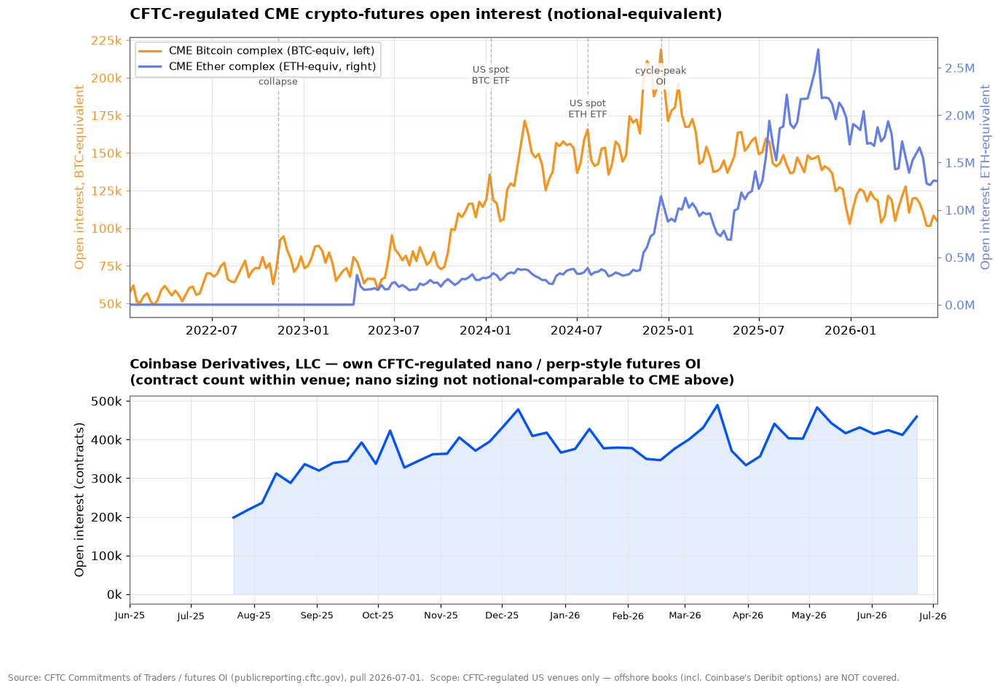
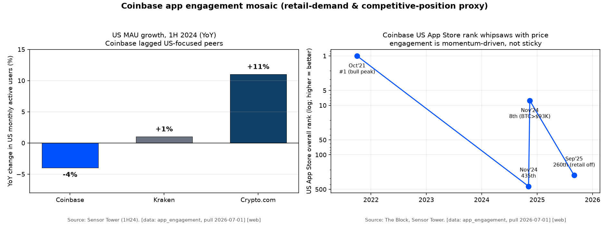
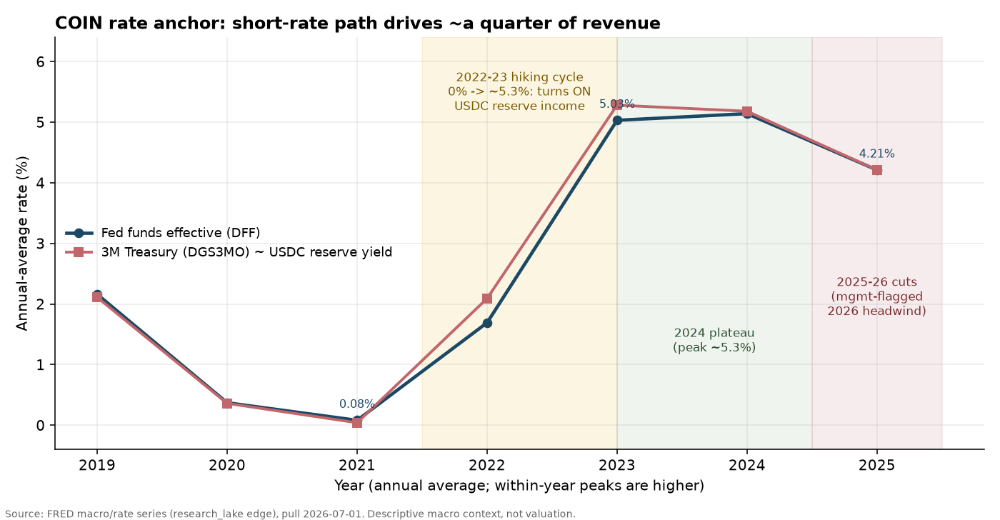
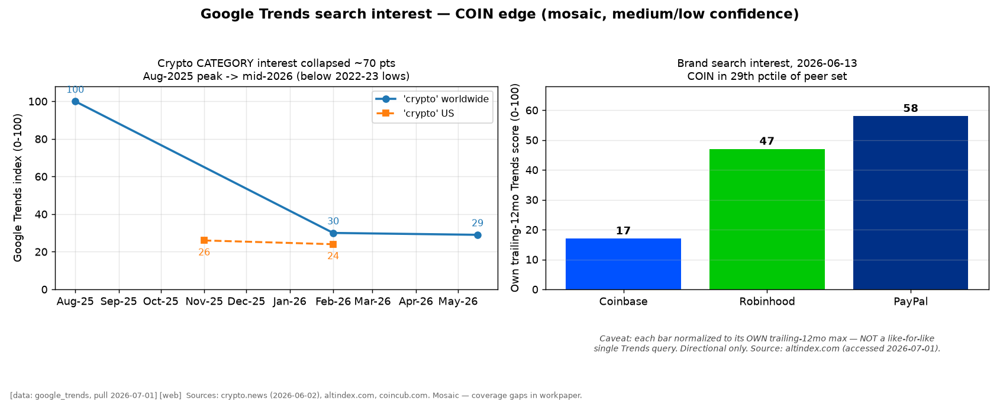

Coinbase Global, Inc. (COIN) — Deep-Dive Dossier
Run date 2026-06-30 · Fiscal year end December 31 · One reportable segment · NASDAQ: COIN
Capitalization (Bloomberg/xBBG, pull 2026-06-30)
| Item | Value |
|---|---|
| Shares outstanding (Mar-31-2026 period-end) | 263.4M |
| Current price (2026-06-30 close) | $143.53 |
| Market capitalization | $37,820M |
| Net debt / (net cash) | $(2,474)M |
| Enterprise value | $35,346M |
Consensus multiples (BEst, at $143.53)
| Multiple (consensus, BEst) | FY2026E | FY2027E | FY2028E |
|---|---|---|---|
| P/E (adjusted) | 122x | 30x | 25x |
| P/E (GAAP) | n/m | 33x | 27x |
| EV / EBIT | 61x | 20x | 17x |
| EV / EBITDA | 21x | 12x | 11x |
| Dividend yield | 0.0% | 0.0% | 0.0% |
Fiscal year end December 31. Market data Bloomberg via xBBG, live terminal, pull 2026-06-30 (COIN answers COIN US Equity directly). EV = market capitalization plus net debt; COIN is net cash, so EV sits below market cap. Net cash reflects roughly $10.1B corporate cash after the Q1-2026 buyback less $7.2B of long-term debt, plus other BBG adjustments. FY2026E adjusted P/E of 122x is mechanically high because consensus models FY2026 as a sharp cyclical earnings trough (adjusted EPS $1.18); the FY2027E/28E multiples are the cleaner comparison. Descriptive market context only — no valuation judgment.
Run basis and scope
| Field | Value |
|---|---|
| Run date | 2026-06-30 |
| Fiscal basis | FY ends December 31; calendar = fiscal |
| Reporting entity | Coinbase Global, Inc.; single reportable/operating segment |
| Latest data cut | FY2025 10-K (filed 2026-02-12) + Q1-2026 10-Q (filed 2026-05-07) |
| Market/consensus refresh | Bloomberg/BEst, pull 2026-06-30 (consensus snapshot 2026-06-26) |
| Scope note | This dossier contains no valuation judgment, price target, or buy/sell view. |
Global reading notes
| Issue | Reading note |
|---|---|
| The latest full year is already stale | FY2025 was a near-peak year. Q1-2026 inflected hard: total revenue $1,413M (−30.5% YoY), an operating loss of $21M, and a $394M net loss. Compare every FY2025 headline against the Q1-2026 run-rate, which annualizes far lower. |
| GAAP net income is decoupled from operations | Since adopting ASU 2023-08 (Jan 1, 2024) and actively growing its own Bitcoin book (~$2.0B), Coinbase marks that crypto to fair value through net income. The mark was a $529M loss in FY2025 and a $482M loss in Q1-2026 alone. Operating income and Adjusted EBITDA are the steadier operating signals; GAAP net income is a leveraged crypto bet stacked on top. |
| Multi-year KPI series have definitional breaks | Trading Volume was redefined in Q4-2025 (adds half of off-platform-routed spot trades); MTU shifted from point-in-time to annual-average; Assets on Platform was dropped then redefined; FY2019–FY2023 predate ASU 2023-08. Treat the long series as basis-broken, not continuous. |
| Single segment, web-dependent external view | No GAAP segment P&L exists (CEO and President/COO review the company as one), so per-segment economics are built from the Note 4 disaggregated revenue table. No curated sell-side coverage exists for COIN; the external view rests on competitor filings and credible web sources. Claim-verification coverage: 83 of 157 eligible claims verified under tiered sampling; high-confidence claims not individually verified are used as written. |
1. Business description, model & unit economics
Coinbase operates the largest US-regulated crypto platform: a retail trading app, an institutional prime brokerage and custody business (Coinbase Prime), four order-matching exchanges including the options leader Deribit, a stablecoin distribution franchise (USDC), a staking business, and a Layer-2 blockchain (Base).❝ It reports one segment, so the economics are taken from the Note 4 disaggregated revenue table. FY2025 total revenue was $7,181M, which management headlines as net revenue of $6,883M (transaction plus subscription & services) plus $298M of corporate interest and other income.
The revenue splits into two franchises with opposite economic engines. Transaction revenue ($4,055M, 56.5% of total) is fees and embedded spreads on trading — volume times take-rate, geared directly to crypto prices and volatility. Subscription & services ($2,828M, 39.4%) is recurring, balance- and rate-driven income: the USDC reserve-revenue share, staking commissions, interest income, custody, and Coinbase One subscriptions. Across the 2021→2025 cycle the mix rotated hard: subscription & services rose from 7% of net revenue in 2021 to 41% in 2025, while transaction revenue declined from 93% to 59%❝ (financial-historian, FY2019–FY2025). The structural claim management makes (that the second franchise de-risks the first) is real at the level but qualified in the detail, because the recurring leg swapped crypto-price cyclicality for interest-rate cyclicality (Sections 3 and 6).
The demand-driver tree — Management frames the business as trading plus a growing "recurring subscription & services" annuity, but decomposed to the measurable driver, roughly 90% of revenue is a bet on two exogenous variables: the crypto price and volatility that set trading volume and staked-asset values, and the Fed-set short rate that sets USDC and custodial-interest income. The "recurring" label describes the accounting line, not the underlying risk.
| Demand driver | Share of revenue | Ultimate exposure (decomposed) | Realized 3-yr contribution | Robustness |
|---|---|---|---|---|
| Consumer retail trading (transaction) | ~46% ($3,323M) | Retail spot volume ($239B) × blended consumer take (1.39%); volume rises and falls with crypto price level and volatility, and take is set by the Simple→Advanced product mix and structurally compressing (178→139 bps). Crypto-price/volatility beta, not "crypto adoption" | Part of transaction's +$1,699M (~43% of the FY2022→FY2025 revenue growth), but consumer revenue fell 3% in FY2025 on +7% volume and is 41% below the 2021 peak — cyclical recovery, not secular growth | Cyclical, violent amplitude (Q1-2026 −48% YoY); structurally lower peak take rate |
| Institutional & other transaction | ~10% ($733M) | Institutional volume ($982B) × ~4.9 bps (spot ~3.3 bps) + Base sequencer fees (onchain tx count × fee, inside "Other transaction," $253M) — near-commodity crypto-volume beta | Institutional +37% YoY in Q1-2026 on the Deribit (derivatives) acquisition; Base and other newly material — the only share-gaining transaction legs | Cyclical; derivatives structurally growing but acquired, not organic; commodity pricing |
| USDC stablecoin distribution (S&S) | ~19% ($1,349M gross; ~$907M net) | USDC balance (~$61–65B avg) × reserve yield (~4.1%, a Fed-rate function) × ~50% Coinbase share, less a rising USDC-rewards cost (24.6%→32.7%→37.1%). Not "the onchain economy" — a rate spread on a balance | Largest single S&S growth driver (S&S = ~51% of the 3-yr growth, USDC roughly half of that); FY2025 bridge +$732M from balances vs −$291M from the rate | Rate-cyclical (±$540M per 150 bps); Circle renegotiation cliff Aug-2026; counterparty 19%→23%. Not durable recurring |
| Staking / blockchain rewards (S&S) | ~9% ($677M gross; ~$250M net, ~37% kept) | Assets staked (~$22.7B) × protocol reward rate × token price (SOL/ETH) — crypto-AUM plus token-price beta, booked gross then ~63% passed through | Net kept ~$250M, flat for two years while the gross line swung on token prices; −49% YoY in Q1-2026 | Crypto-price cyclical, "not an annuity"; Lido and self-custody pressure |
| Interest, custody, subscriptions & corporate interest | ~15% ($1,100M) | Custodial fiat/USDC balances × rate; ETF and institutional custody AUC (~$300B) × bps (crypto-AUM); Coinbase One ~1M subs × ARPU (the only genuinely durable subscription); corporate treasury × rate | Grew with rates and ETF-custody AUC (live since Jan-2024); Other S&S −22% YoY in Q1-2026 | Mixed: custody is the one structural-moat leg but AUM-linked and fee-pressured; interest and corporate interest are rate bets; only Coinbase One is durable recurring |
Netting it out: transaction (~56%), staking (~9%), and the custody slice of "Other S&S" move with crypto prices and AUM, while USDC (~19%), interest & finance (~3%), and corporate interest (~4%) move with the Fed — so roughly 90% of revenue is crypto-price or interest-rate beta. The only genuinely durable, SaaS-like recurring economics are Coinbase One and the subscription piece inside "Other S&S," a fraction of that line's 7.7% of revenue and not separately disclosed; Q1-2026 confirmed the correlation, with revenue −30.5% YoY as transaction (−40%), staking (−49%), and stablecoin (down sequentially on a rate cut) all fell at once.
1a. Transaction revenue — a US-retail pricing premium on ~20% of the volume
The transaction franchise is mostly consumer. FY2025 consumer trading revenue was $3,322.8M (82% of the segment) on roughly $239B of volume, an implied take rate of 1.39%; institutional revenue was $479.7M on $982B of volume, an implied 4.9 bps; "other transaction" (chiefly Base sequencer fees and deposit/withdrawal processing) was $252.9M (business-model--Transaction, FY2025 10-K Note 4). Consumer therefore earns roughly 28x the institutional take rate (1.39% versus 0.049%) on a quarter of the platform's spot volume.❝ The reported institutional rate is itself overstated because it now includes Deribit derivatives revenue measured against a spot-only volume denominator; the underlying spot institutional take is closer to 3.3 bps once the ~$152M FY2025 derivatives uplift is stripped (business-model--Transaction §3 footnote).
Coinbase recognizes transaction revenue net, as an agent — it does not hold crypto inventory or price risk behind the fee (FY2025 10-K rev-rec). The direct cost is the "transaction expense" line, but that line is consolidated and includes the staking pass-through. Stripping the $427.5M of blockchain-rewards fees out leaves transaction-attributable cost of roughly $593M (maker rebates and commissions $221.5M, payment processing $194.6M, chargeback/reversal losses $132.7M, other $44.0M), implying transaction gross margin of about 85% [estimate: strip blockchain-rewards fees from transaction expense; bound 85–87%] (business-model--Transaction §4). The incremental cost of one more matched trade on an existing engine is near zero, which is why transaction revenue deleverages sharply when volume falls.❝
| Period | Consumer rev | Consumer vol | Consumer take | Institutional take | Blended take | Basis |
|---|---|---|---|---|---|---|
| FY2023 | $1,334M | $75B | 1.78% | 2.3 bps | 0.33% | old def |
| FY2024 | $3,430M | $224B | 1.53% | 3.6 bps | 0.34% | recast |
| FY2025 | $3,323M | $239B | 1.39% | 4.9 bps* | 0.33% | recast |
| Q1-2025 | $1,096M | $79B | 1.39% | n/a | 0.32% | recast |
| Q1-2026 | $567M | $36B | 1.58% | n/a | 0.37% | recast |
*Institutional take is muddied by Deribit derivatives revenue sitting on a spot-only volume base; the true spot institutional take is ~3.3 bps.
What drives the consumer take rate is product mix more than price. It compressed from 1.78% (2023) to 1.39% (2025) because Coinbase's own users migrate from high-fee Simple trading to lower-fee Advanced and Coinbase One.❝ The FY2025 10-K attributes a $384.4M consumer-revenue decline to "a lower average blended fee rate, primarily due to changes in the mix of Trading Volume from Simple users to Advanced and Coinbase One users who pay lower average fees," only partly offset by $277.0M from 7% volume growth — so the mix shift cost more than the volume added, and consumer transaction revenue declined 3% YoY on rising volume. The CFO would not commit to a take-rate floor: Coinbase One members "benefit from up to no trading fees, although we do still generate a spread… I can't tell you when the take rates will [stop compressing]" (Q4-2025 call). The countervailing fact is that the rate is cyclically reversible — in the Q1-2026 sell-off it rose to 1.58% because low-fee high-frequency Advanced flow declined faster than impulse Simple flow.
1b. Subscription & services — four businesses, two reported gross of large pass-throughs
Subscription & services is not one franchise but four, and two of them are reported gross of a large cost that sits elsewhere in the P&L, so the headline overstates the economics kept.
| Unit | FY2025 gross | Direct variable cost (where it sits) | Net economics kept | Driver |
|---|---|---|---|---|
| Stablecoin / USDC | $1,348.8M | USDC rewards $441.3M (in Sales & marketing) | ~$907M (on+off platform, after rewards) | USDC market cap × reserve yield × ~50% Coinbase share |
| Blockchain rewards (staking) | $677.4M | Blockchain rewards fees $427.5M (in transaction expense) | ~$249.9M net commission (~37% of gross) | Assets staked × reward rate × token price |
| Interest & finance fee | $247.0M | minimal (funding) | ≈$247M | Custodial fiat + collateralized institutional loans × rate |
| Other S&S (Coinbase One + Prime custody + CDP) | $554.8M | low (not disclosed) | inside the line | Subscribers × ARPU; custody bps; developer usage |
| Total S&S | $2,828.0M |
The stablecoin line is the most important and the most misunderstood. Coinbase does not issue USDC (Circle does), but under the Circle Agreement Coinbase earns roughly 100% of the reserve yield on USDC held on its own platform plus 50% of the residual reserve income on all off-platform USDC❝ (FY2025 10-K rev-rec; CEO: "we capture about 50% of all USDC economics," Q1-2026 call). The cost of pulling balances onto the platform is USDC rewards of $441.3M, booked in Sales & marketing rather than netted against revenue, so it is invisible in the S&S line and rising fast — 24.6% of gross stablecoin revenue in 2024, 32.7% in 2025, 37.1% in Q1-2026. The CEO is explicit that on-platform USDC is the thin-spread slice: "today, we pass the majority of [the yield] along to the customer. If we were prohibited from doing that, ironically, it would just make us more profitable" (Q4-2025 call). The durable, high-margin economics live in the off-platform 50% residual, where there is no reward to pay. A deck table makes the per-dollar gap explicit: in Q4-2025 on-platform USDC of $18B produced $172M while off-platform $58B produced $192M, roughly 3x more revenue per on-platform dollar [deck: Q4 2025 Shareholder Letter, 2026-02-12]. Implied average USDC supply backing the FY2025 revenue is about $61B [estimate: $1,348.8M ÷ (50% × ~4.4% reserve yield); bound $55–67B].
Staking is the other gross-overstated line. Coinbase books the full native-token reward as revenue (it is principal) then pays ~63% back as a cost, keeping roughly 37% — about $250M net, which has been flat for two years even as the gross line swung on token prices. Staking is not an annuity: Q1-2026 staking revenue declined 49% YoY on lower Solana/Ethereum prices and reward rates.❝ Interest and finance fee income is small, rate-geared, and has had zero credit losses to date. Other S&S is the only "normal" subscription bundle, led by Coinbase One, which crossed roughly 1 million paid subscribers at end-2025, up about 3x in three years [deck: Q4 2025 Shareholder Letter, slide 12]; its ARPU is not derivable because the line bundles custody and the developer platform.
A clean S&S operating margin cannot be built even by triangulation because Coinbase reports one segment and technology, the rest of marketing, and G&A are company-shared. The deepest defensible cut is contribution: subtracting the two reported direct costs (USDC rewards $441.3M, blockchain rewards fees $427.5M) from S&S revenue leaves about $1,959M of direct contribution before any shared opex (business-model--S&S §3). Roughly a quarter of total revenue — stablecoin 18.8%, interest & finance 3.4%, corporate interest 4.1% — is interest-rate-driven❝ (Note 4 disaggregation), and management flagged Fed cuts as a 2026 headwind (FY2025 10-K, "Interest rate fluctuations").
1c. Cost structure and operating leverage
The cost base is asset-light and dominated by people. FY2025 transaction expense was $1,020M (14.8% of net revenue), technology & development $1,671M (23.3% of revenue), G&A $1,620M, and Sales & marketing $1,059M (up 62%, half of it USDC rewards). PP&E capex is immaterial — well under 2% of revenue, and zero on the face of the cash-flow statement for 2023–2025 — so free cash flow approximates operating cash flow (FY2025 FCF $2,426M). The operating leverage is real and symmetric: incremental consumer-transaction gross contribution is ~85%, which produced a +73% incremental operating margin in the 2023→2024 up-cycle and a negative incremental margin in 2024→2025❝ as Sales & marketing nearly doubled and a $356M "other operating expense" (mostly the data-theft charge) landed (Section 13). Q1-2026 is the deleverage in full: revenue declined 30% YoY while opex grew 8% (technology & development +48%), producing a $21M operating loss versus $706M of operating income a year earlier.
2. Key technologies & technical differentiators
For most of its stack Coinbase is not a technology-moat business.❝ Its matching engines, multi-approver key custody, staking plumbing, and prime-brokerage software are competent and at scale, but the same capabilities are available off the shelf or from well-funded rivals (Binance, Kraken, Fireblocks, BitGo, Anchorage, Lido, Figment). What differentiates Coinbase is a stack of non-technical assets: a trusted compliant brand, the deepest US regulatory-license position in the industry, and scale, liquidity and distribution.❝ Two genuinely technical or network assets pass the differentiation test, and one operational asset functions like a moat.
Base — the closest thing to a defensible technology network. Base is an Ethereum Layer-2 rollup built on Optimism's open-source OP Stack; Coinbase operates the sequencer that orders transactions and earns sequencer fees (inside "Other transaction," $252.9M FY2025). The code is not the barrier (50+ rollups fork the same stack), but distribution is: Coinbase routes 100M+ verified users, the Base App, USDC, and developer tooling into Base in a way a standalone chain cannot. The observable result is leadership on the metric that compounds, activity: Base held ~$4.6B of TVL (≈47% of all L2 DeFi TVL), ~12.9M daily transactions and ~382,500 daily active users in early 2026, generated ~$75M of chain revenue in 2025 (~62% of all L2 revenue)❝, and was the first L2 to sustainably exceed Ethereum mainnet's daily transaction count [web, defillama.com / rootdata.com, accessed 2026-06-30]. The honest qualifier: Base still runs a single Coinbase-operated sequencer (decentralized at settlement, centralized at sequencing), so the "decentralized" framing is partial, and full sequencer decentralization across major L2s is a late-2026-to-2027 horizon. In February 2026 Base announced it is leaving the OP Stack for a Base-managed codebase and will stop sharing revenue with the Optimism Collective [web, dlnews.com, accessed 2026-06-30] — a forward-integration that keeps 100% of sequencer economics (Section 5).
USDC / stablecoin rails — a contractual claim, not proprietary code. A stablecoin is simple technology (an ERC-20 token plus audited reserves); Coinbase's edge is the Circle Agreement revenue-share plus a two-issuer oligopoly (USDT and USDC are >95% of the ~$270B stablecoin market) and a real legal lock — Coinbase can require assignment of the USDC trademarks if Circle stops paying (FY2025 10-K). USDC grew ~73% in 2025 versus USDT's ~36%, outpacing USDT for a second straight year, but it remains ~29% of the USDT+USDC pair❝ [web, coindesk.com, accessed 2026-06-30].
Custody — operational trust that functions like a moat. Coinbase is the named custodian for >80% of US spot Bitcoin and Ether ETF assets (~$77B, ~84% of the BTC-ETF market)❝ [web, forbes.com / cryptorank.io, accessed 2026-06-30], backed by ~13 years with no reported loss of customer crypto from cold storage. That dominance is also a "choke point" the May-2025 data breach showed is not impregnable — overseas support contractors were bribed to leak customer data on roughly 69,461 customers, with $311.2M of cash cost recognized in FY2025 (Section 18). The matching engines, staking nodes, Prime, and the developer platform (CDP) are table-stakes or distribution glue; their value is the integrated funnel (app users → custody → Base/USDC → developers), which compounds scale rather than resting on any single clever component.
One genuine technical-competitive inflection is already visible: Deribit, the crypto-options leader Coinbase bought for ~$2.9B (>85% options share at acquisition), saw its Bitcoin-options open-interest lead overtaken by BlackRock's IBIT listed options in late-2025/early-2026 (~$27.6B versus ~$26.9B), though Deribit still holds >90% of ETH options [web, coindesk.com, accessed 2026-06-30].
3. Competitive advantages & moat assessment
The advantage is real but contestable, and it differs sharply by franchise.❝ Coinbase earns genuine excess returns at the top of the crypto cycle on a US-retail pricing premium and on USDC distribution economics, but those returns are sharply cyclical rather than durable, the retail premium is compressing from the inside, and the recurring leg is a rate-cyclical contractual rent rather than a pricing-power moat. This is not a Visa/Mastercard-type structural advantage that throws off stable excess returns with little reinvestment to defend it; it is a brand/trust/regulation-based edge that produces large profits in up-cycles and an operating loss in down-quarters❝, and it sits well below the great exchange franchises on both margin level and stability. Custody is the one leg with structural-moat characteristics, but it is small in disclosed revenue and fee-pressured.
The strongest evidence for the moat is the take rate. Coinbase sustains a ~1.4% blended consumer take while posting the highest headline retail fees among major exchanges❝ (Coinbase Advanced base 0.40%/0.60% maker/taker versus Binance ~0.10% and Kraken 0.25%/0.40% [web, kraken.com / dextools.io, accessed 2026-06-30]) and retains the largest US-regulated retail venue. That is the financial evidence of pricing power: price well above the marginal competitor with volume retained. But four facts cut against treating it as durable. The premium is compressing where it is largest (consumer take 1.53%→1.39% in FY2025, consumer revenue down 3% on +7% volume). Where Coinbase faces sophisticated counterparties it has essentially no pricing power (institutional take ~4.9 bps on ~80% of volume for ~12% of transaction revenue). Transaction revenue has not grown: it is 41% lower in FY2025 ($4,055M) than in FY2021 ($6,837M).❝ And the returns are not durable: a 50% YoY volume collapse cut Q1-2026 transaction revenue 40% and the company reported an operating loss.
Management claims: trust, one-to-one custody, ease of use, a compliant brand, and the stickiness of a large custody base feeding trading — "we store 12% of all crypto in the world, more than the next four competitors combined… these assets are very sticky as we connect more products into them" (Q4-2025 call). To its credit the 10-K's competition section plainly lists rivals' advantages over Coinbase: greater name recognition, the ability to operate at a loss, lower-compliance-cost jurisdictions, and products Coinbase cannot offer (FY2025 10-K line 2151).
External sources: with no curated sell-side coverage, the external view rests on competitor disclosures and credible web sources. Coinbase's posted retail fee is the highest of the three majors, and its realized blended consumer take (~1.4%) is higher still because most retail flow runs through Simple. The sharper onshore threat is Robinhood, which routes retail crypto to third-party market makers as agent at a thinner spread (~110 bps) and grew crypto revenue to ~$901M in FY2025 (roughly doubled)❝, diversified enough that it grew revenue +15% in Q1-2026 while Coinbase's declined ~31% (competitive-advantage--Transaction; HOOD FY2025 10-K).
Ground-up view: spot crypto matching is a low-marginal-cost, fungible service where liquidity begets liquidity, which globally favors Binance, not Coinbase. The constraint that lets Coinbase escape fee gravity is regulation plus trust in one specific market — US retail, where a customer's realistic alternative is a small set of US-licensed venues plus the friction of self-custody or offshore access they cannot easily use. That narrowed choice set, not technology, supports the 1.4% take; it is a switching-cost-plus-brand-plus-regulatory-perimeter advantage, real but jurisdiction-bound and erodable as US rules clarify❝ (the 10-K itself flags that clearer US regulation will increase competition from US-based players). Institutions face no such constraint, which is why the institutional take is near commodity. The three groundings reconcile: management's "trust and ease of use" is an accurate label for the moat, but it is narrower than management claims (deep but US-retail-specific), and the evidence supports the narrower view.
Inside the recurring franchise the durable core is regulated distribution and custody trust, not pricing. About 48% of S&S is a contractual share of a rate spread (stablecoin reserve income), which a 150 bp rate move swings by ±$540M and which is up for renegotiation at the Circle Agreement's initial three-year term, lapsing around August 2026. Another ~24% is staking commission, down 49% YoY in Q1-2026. The one structurally moat-like leg — ETF and institutional custody — passes the switching-cost and trust tests but is buried in "Other S&S" and fee-pressured. The genuinely advantaged position is inside the USDC value chain: Coinbase, the distributor, out-earns Circle, the issuer (Section 5).
Peer financial table (FY2025, computed from each company's own 10-K)
| Company | FY25 revenue | FY25 rev YoY | Operating margin | Net margin | Tech/R&D intensity | ROIC | Q1-26 rev YoY | Q1-26 op margin |
|---|---|---|---|---|---|---|---|---|
| COIN | $7,181M | +9% | 20.0% (total) / 20.9% (net) | 17.6% | 23.3% | ~13.7%* | −31% (txn −40%) | −1.5% (loss) |
| HOOD (Robinhood) | $4,473M | +52% | 46.8% | 42.1% | 20.1% | n/a | +15% | 38.5% |
| CME Group | $6,521M | +6% | 64.9% | 62.5% | low | high/stable | stable | ~65% |
| ICE | $9,931M | +14% | 50.0% (GAAP) | 33.4% | low | stable | stable | ~50% |
| PYPL (PayPal) | $33,172M | +4% | 18.3% | 15.8% | — | stable | stable | stable |
| CRCL (Circle, counterparty) | $2,747M | +64% | 39% (rev-less-distribution) | (2.5)% | — | n/m | — | — |
*COIN ROIC is an estimate and cycle-dependent (≈28% in FY2024, negative in FY2023); the crypto treasury and ASU 2023-08 marks make a single-year figure non-comparable, so the net-income volatility series is the more reliable returns evidence. ROIC defined as NOPAT (operating income × (1 − effective tax)) over invested capital = equity + debt − cash − crypto-held-for-investment − marketable/strategic investments; cost of capital ~10–12% for a high-beta crypto-cyclical equity.
The gap is widening against Coinbase, which is the moat-erosion tell.❝ In FY2024 Coinbase's 35.2% operating margin (total revenue) was within range of the exchange peers; in FY2025 it dropped to 20.0% while CME (64.9%) and ICE (50%) held and Robinhood rose. In Q1-2026 Coinbase posted an operating loss while all three peers stayed solidly profitable and Robinhood grew revenue as Coinbase's declined. The two crypto-retail monetizers, Coinbase and Robinhood, ran the same downturn in opposite directions: Robinhood's diversification made it counter-cyclical to the very crypto decline that pushed Coinbase to a loss. CME and ICE demonstrate what a durable transaction moat looks like — 50–65% operating margins held steady across the cycle — and Coinbase's franchise resembles it only on top-of-cycle level, not on stability.❝ The recent-quarter check matters: Coinbase's latest-FY 20% operating margin overstates the current run-rate, whereas the peers' Q1-2026 quarters confirm their FY2025 profitability.
4. Competitive landscape & market sizing
Coinbase is the scale leader where it competes head-to-head — #1 US-regulated spot (~41% of North-American crypto activity) and, via the August-2025 Deribit acquisition, the global #1 in crypto options (>85% share) — but a minor player in global spot volume (~5% share; Binance's spot volume is roughly 6–8x larger at ~38%).❝ It does not win on volume; it wins on monetization, earning a ~139 bps consumer take, 10–15x Binance's ~10 bps, so its spot revenue share is multiples of its volume share.❝ The fastest-closing competitors are Robinhood onshore and decentralized exchanges structurally; the much-cited "doubled market share to 6.4% in 2025" is substantially acquired (Deribit) and definitional (the Q4-2025 volume redefinition), not organic spot-share gain.
The transaction business is three arenas with three leaders. Global spot is a Binance-led oligopoly (~38% share, top-10 CEX volume ~$18.7T in 2025); Coinbase is a price-maker only in its US walled garden because a US retail user's realistic substitute is Robinhood/Kraken/Gemini, not Binance. US-regulated spot is Coinbase-led and is the fat profit pool. Derivatives are Binance-led globally (~$85.7T volume in 2025), CME-led in regulated futures, and Deribit-led in options — the purchase moved Coinbase from a derivatives also-ran to the global #1 in options overnight. The cross-arena identity: Binance did ~$7.1T of spot at ~10 bps for ~$7B of revenue; Coinbase did $1.22T at a 33 bps blend for $4.06B — roughly 6x the volume for ~1.6x the revenue, so Coinbase trades volume scale for price.❝
Peer scale & KPI table — Transaction (spot trading, FY2025)
| Player | Spot volume | Global spot share | Blended take | Transaction revenue | Notes |
|---|---|---|---|---|---|
| Coinbase | $1,221B (recast KPI) | ~5% global; ~41% N. America | 33 bps (139 bps consumer) | $4,055M | US-regulated leader, premium price |
| Binance | ~$7,100B [estimate] |
~38–41% | ~10 bps | ~$7,000M [estimate] |
Global #1; restricts US |
| Bybit | ~$1,500–2,000B [estimate] |
~8–10% | ~10 bps | n/d (private) | Offshore |
| OKX | ~$1,000–1,500B [estimate] |
~6–8% | ~8–10 bps | n/d (private) | Offshore |
| Kraken | ~$400B [estimate] |
~3.6% | ~16–26 bps | n/d (filed confidential S-1) | US/EU regulated peer |
| Robinhood (HOOD) | $82B crypto notional | <1% global, rising US | ~110 bps | ~$901M | Closest onshore retail threat |
Peer scale & KPI table — Subscription & services (FY2025)
| Line | Coinbase position | Nearest rival scale | Direction |
|---|---|---|---|
| USDC distribution ($1,348.8M) | Largest USDC distributor; ~50% of total USDC economics, >25% of USDC held on platform | Backs the #2 coin: USDT ~$188B is ~2.4x USDC (~$78–80B); rival distributors (Binance, Bybit) get fees an order of magnitude smaller | USDC outgrowing USDT, but subordinate in the overall stablecoin market |
| Staking ($677.4M) | #1 US/regulated; #3 in ETH overall (~5.1% of staked ETH), #2 among exchanges | Lido ~23–24% (decentralized), Binance ~9% | Revenue in sequential decline |
| Custody (in Other S&S) | Runaway leader: ~80–84% of US BTC/ETH ETF assets, $294–376B AOP, ~12% of all crypto | BitGo $104B AUC; Fidelity self-custodies its ETF; BNY Mellon entering | Wide lead, credible entrants — watch ETF issuers adding second custodians |
| Coinbase One (in Other S&S) | ~1M paid subscribers (ATH, 3x in 3 years) | Robinhood Gold ~4.3M (~4x larger) | Nascent, cross-sell engine |
Bottom-up sizing: global CEX spot of ~$22–25T in 2025 puts Coinbase at ~5% spot share, consistent with "Binance spot ≈ 8x Coinbase." The structural share-taker is decentralized exchanges: the DEX-to-CEX spot ratio hit records in 2025 (~21% sustained, peaks to ~37%), up from ~6% in early 2021, leaking volume out of the pool Coinbase competes in.❝ Management's "Everything Exchange" framing folds equities, futures, perpetuals, prediction markets, and stablecoin payments into the addressable set, which inflates the TAM well beyond crypto trading; the checkable market for this segment is crypto spot plus derivatives, sized above, and the rest is marketing until the non-crypto lines show disclosed revenue. Share counter-evidence, ranked: DEX migration (largest structural threat), Robinhood onshore (attacks the exact US-retail pool funding the 139 bps take), take-rate compression from Coinbase's own Simple→Advanced mix, offshore venues entering as US rules clarify, and CME/IBIT options eroding Deribit's BTC franchise. The durable-advantage interpretation of this structure is in Section 3.
External data. Two external series sharpen the read. CFTC data on US-regulated futures shows CME as the incumbent: Bitcoin-futures open interest peaked near 219,000 BTC-equivalent in December 2024 and Ether-futures open interest near 2.69M ETH-equivalent in October 2025, both since down about 50%, while Coinbase Derivatives LLC built its own CFTC-regulated book from about 198,000 contracts in July 2025 to about 459,000 in June 2026 — Coinbase is entering the regulated-US futures segment rather than ceding it, though it trails CME on scale, and its offshore Deribit options unit sits outside CFTC data [data: cftc_futures_oi, pull 2026-07-01]. An app-engagement mosaic corroborates the Robinhood threat: Coinbase US monthly active users declined about 4% year-over-year in the first half of 2024 while Crypto.com rose about 11%, Coinbase users spent under four minutes a day in-app against more than ten on Binance, and the app's US App Store rank swung from 435th to 8th and back within months around the November-2024 spike, so engagement moves with the crypto price rather than compounding [data: app_engagement, pull 2026-07-01] [web].


5. Value chain & profit pools
Coinbase sits in four different value chains, not one, and the two worth decomposing are stablecoin and staking, where the dollar split is counter-intuitive.
The USDC reserve dollar — the distributor out-earns the issuer. This is the single most important value-chain fact about Coinbase. USDC average circulation was ~$64.9B in FY2025 at a 4.1% reserve return, so gross reserve income was about $2,660M [estimate: 4.1% × $64.9B, ties to Circle's $2,747M total]. Of that, Circle paid Coinbase $1.4B of distribution costs (CRCL FY2025 10-K), and Circle (the issuer that bears the reserve management, issuance, and regulation) posted a net loss of $(70)M.❝ Coinbase booked $1,348.8M of stablecoin revenue at minimal direct cost.
| Layer of the USDC reserve dollar | Named party | FY2025 $ | Share of ~$2,660M gross |
|---|---|---|---|
| Reserve-management skim | BlackRock fund / BNY custody | reduces base before split | ~0.35% of the 4.1% gross |
| Largest distributor | Coinbase | $1,400M | ~53% |
| Other distributors | Binance, others | ~$0.2–0.3B | ~10% |
| Issuer after distribution | Circle | net loss $(70)M | residual, then negative |
| End holder | USDC holders | $0 direct yield | 0% |
Two independent angles converge on ~53–56% capture: Circle's $1.4B distribution cost over ~$2.66B gross is 53%, and Coinbase's own rate-sensitivity disclosure ($540.3M per 150 bps) implies it earns the full spread on an effective base of $36.0B, or 55.5% of average circulation. The profit pool in the USDC chain sits at distribution, not issuance — Coinbase wins the value-chain split today.❝ The same fact is the renegotiation risk: it is the gap Circle's public shareholders will push to close at the August-2026 term, and Circle's own 10-K flags that distributors capturing "an increasing percentage" of reserve income would hurt its profitability. A self-funded flywheel sits underneath: Coinbase pays $441.3M of USDC rewards to grow the on-platform balance it earns the highest capture on.
The staking dollar — gross presentation overstates the take ~2x. Proof-of-stake protocols issue rewards; Coinbase books them gross as principal ($677.4M), passes ~63% to stakers as a cost ($427.5M), and keeps ~37% (~$250M). The 9.4%-of-revenue line is ~$250M of economics dressed up by gross presentation.❝
The Base sequencer dollar — a bargaining-power reversal toward Coinbase. Base originally owed the Optimism Collective the greater of 2.5% of sequencer revenue or 15% of profit and received up to 118M OP tokens, sharing >$16M cumulatively [web, theblock.co / dlnews.com, accessed 2026-06-30]. In February 2026 Base left the OP Stack and ended the revenue share — Coinbase forward-integrated away from its upstream tech supplier and now keeps 100% of sequencer economics.
The binding constraint is regulation — the legal characterization of assets and services governs which products Coinbase can offer and survival itself — confirmed, but with a second economic-fragility constraint the company map under-weights: the Circle counterparty, which rose from 19% of total revenue in FY2025 to 23% in Q1-2026 as transaction revenue declined faster than stablecoin revenue❝. Banking access is a latent constraint (customer USD and USDC reserves sit at banks; a de-banking event would break settlement). On bargaining-power trajectory, the Coinbase↔Circle interface is slowly eroding toward Circle (Circle's own-platform USDC share rose 5.7%→17.2% YoY and it is adding distributors), the rate interface is a headwind (reserve yield 5.0%→4.1%→3.5% Q1-2026), staking is pressured by Lido and self-custody, and the consumer interface is a declining-blended-take story via mix. Circularity is notable: Coinbase co-founded USDC, is Circle's largest distributor, and holds a Circle equity stake (partly sold at Circle's June-2025 IPO), so ~19% of revenue depends on a partner it part-owns and helped create.
6. Secular & industry trends
Coinbase's demand has two clocks. The transaction franchise (56.5% of revenue) is sharply cyclical and structurally decaying at the peak: the 2025 cycle-high transaction revenue ($4,055M) was 41% below the 2021 high ($6,837M) even though total crypto market cap set a higher all-time high in 2025 (~$4.27T in October) than in 2021 (~$2.9T)❝. The cause is structural take-rate compression (blended take 40.9 bps in 2021 → ~33 bps in 2025; consumer take 178 → 139 bps) plus a retail-engagement ceiling (annual-average MTUs of 9.2M in 2025 still below the ~11.4M quarterly peak of 2021). The implication for any forward view: model transaction revenue as cyclical around a structurally lower peak take rate, not as a return to 2021 economics if prices revisit highs.
The subscription & services franchise (39.4%) is the genuine secular grower (5.5x its 2021 peak [deck: Q4 2025 Shareholder Letter]), led by USDC, but it imports a new cyclicality. The FY2025 stablecoin bridge: +$417.7M from higher on-platform USDC, +$314.1M from higher off-platform USDC, −$290.8M from an 89 bp average-rate decline — so adoption beat the rate drag, but the two pull in opposite directions into a Fed-cutting cycle. Staking is crypto-price-cyclical, not secular (−49% YoY in Q1-2026). The net is that S&S is "less cyclical," not "non-cyclical": it swapped crypto-price beta for interest-rate beta and kept price beta in staking, so a Fed-cutting plus crypto-down path hits both legs at once❝, as Q1-2026 showed (total S&S −14% YoY).
Share math: in 2024 Coinbase gained US spot share (spot volume +148% versus US market +105%); in 2025 it lost global spot share (spot volume +2.8% versus the global market +9%), partly by an intentional March-2025 pricing change that ceded $101B of low-value stablecoin-pair volume. Coinbase's own "doubled market share" headline is total volume including Deribit and perpetuals — a different denominator — so the reconciliation is that Coinbase is trading spot-share erosion (~7%→~6.1%) for a derivatives build-out and balance-based revenue [web, CoinGecko 2025 CEX research, accessed 2026-06-30].
Technology and policy shifts cut both ways. Decentralized exchanges and self-custody are the down-slope risk (the 10-K notes DEX volumes "rivaling our own platform on multiple occasions"), and Coinbase's hedge is to own the rails (Base, the Base App, DEX routing inside its app), converting some of the threat into sequencer and routing revenue. Stablecoins as payment rails are the up-slope for S&S; management frames "0.5% of global GDP on crypto rails today → 10–20% in a decade," which is a 20–40x penetration claim with no dated bridge and should be treated as optionality against today's monetized reality of ~$1.35B of stablecoin revenue❝. The 2025 regulatory turn was favorable: the GENIUS Act (federal stablecoin framework, July 2025) legitimized USDC and bars issuers from paying yield directly (channeling the reserve dollar to issuer and distributor), the CLARITY Act (market structure) was advancing, and the SEC case was dismissed with prejudice in February 2025 — but the same clarity invites US bank and fintech entry, and the new "Everything Exchange" products (event contracts, equities) present fresh, unsettled legal questions. The KPIs that would break first if the secular story were breaking: native unit inflows turning to outflows (nine straight inflow quarters through Q4-2025 is the current green light), on-platform USDC and total USDC market cap stalling, consumer take falling further below 139 bps with no offset, and "Everything Exchange" volume not converting to revenue.
External data. Two primary series anchor the rate and retail-engagement mechanics. The FRED 3-month Treasury yield rose from about 0.1% in 2021 to a 5.3% peak across 2023–2024, then eased to a 4.2% average in 2025, tracking Coinbase's disclosed USDC reserve yield (5.0% → 4.1% FY2025 → 3.5% Q1-2026) within about 10 bps — so the ±$540M-per-150bps stablecoin sensitivity is tied to an observable Fed series, and the 2025–2026 cutting path is the quantified headwind management flagged [data: fred_series, pull 2026-07-01]. Google Trends shows the crypto search category down about 70% from its August-2025 peak by May 2026, with bitcoin search interest below its 2022–2023 lows even though BTC trades 4–5x the 2022 floor, so retail search is separating from price as ETFs and custody move the on-ramp off the exchange app, consistent with MTUs never reclaiming the 2021 peak [data: google_trends, pull 2026-07-01] [web].


7. Critical points
-
GAAP earnings are now a leveraged crypto bet stacked on the operating business. Since adopting ASU 2023-08 and actively growing its own ~$2.0B Bitcoin book, Coinbase marks that crypto through net income — a $529M loss in FY2025 and a $482M loss in Q1-2026 that flipped a roughly breakeven operating quarter to a $394M net loss. FY2025 net income of $1,260M declined 51% even though revenue rose 9%, almost entirely on a $1,216M swing in the crypto-held-for-investment line. Operating income ($1,435M) and Adjusted EBITDA ($2,808M) are the steadier operating signals.
-
The transaction franchise has not grown and its peak earning power has structurally stepped down. Transaction revenue is 41% lower in FY2025 than in FY2021 despite a higher crypto market-cap peak, because consumer take compressed from 178 to 139 bps and retail engagement never reclaimed the 2021 mania. A new bull market does not reset 2021 earnings power. See Section 8.
-
Roughly a quarter of revenue is interest-rate-driven, so diversification swapped one cyclicality for another. Stablecoin (18.8%), interest & finance fee (3.4%), and corporate interest (4.1%) all decline with the Fed, which management flagged for 2026; Q1-2026 stablecoin revenue declined sequentially on a 67 bp rate drop despite balance growth. The "less-cyclical S&S" thesis is half-true. See Section 8.
-
One counterparty is ~19% of revenue and rising, with a renegotiation cliff in August 2026. Stablecoin revenue is the Circle Agreement reserve-share; the counterparty was 19% of total revenue in FY2025 and 23% in Q1-2026. The initial three-year term lapses around August 2026, and Circle — now public and loss-making after paying Coinbase $1.4B — has every incentive to claw the split back. The model treats this as the largest single bear swing.
-
The recurring leg is genuinely advantaged inside the USDC value chain. Coinbase, the distributor, captured ~53% of the reserve-income dollar while Circle, the issuer, ran a net loss — the profit pool sits at distribution, not issuance. This is the strongest moat evidence in the recurring franchise, and it is the same fact that creates the renegotiation risk (Section 5).
-
Cost discipline is the one high-confidence lever. Management's guided-line hit-rate is effectively 100% (zero S&S misses below the low end across eight scoreable quarters, expenses inside the band every quarter and twice below), and the FY2026 framework cuts ~$500M and 14% of headcount. This reliability is why a driver model can credit the cost line even while the revenue line is unforecastable.
-
Capital allocation turned shareholder-friendly only in the last two quarters. Buybacks began in Q4-2025 ($790M at ~$260) and ramped in Q1-2026 ($1,062M at ~$169), price-sensitive and into a falling stock, finally turning net share count down for the first time. Lifetime share count is still up ~60% since IPO; the buyback is running to stand still against SBC. See Section 10.
-
Q1-2026 overturns any FY2025-anchored quality assessment. Revenue −30.5% YoY, an operating loss, transaction −40%, staking −49%, a $482M crypto mark, and a $394M net loss in one quarter is the bad-quarter scenario firing on every correlated risk at once. A moat/quality assessment anchored on FY2025 alone misses that the current quarter is in operating loss (Section 18).
8. Variant perceptions
-
"A new crypto all-time high restores Coinbase's 2021 earnings power." Evidence against: 2025 set a higher crypto market-cap ATH than 2021 (~$4.27T versus ~$2.9T), yet transaction revenue was 41% lower ($4,055M versus $6,837M) and consumer take had declined to 139 bps. Price recovery does not reset transaction earning power because take rate and retail engagement structurally declined. The assumption-refuter judged the model's structurally-lower-peak treatment sound; the base case keeps 2030 transaction revenue below the 2021 peak even in a full recovery.
-
"Subscription & services has de-risked Coinbase from crypto cyclicality." Evidence against: S&S declined 14% YoY in Q1-2026 as staking declined 49% and the stablecoin leg absorbed a rate-cut drag; stablecoin, interest, and staking are ~84% of the segment and are all levered to rates or crypto prices. A Fed-cutting plus crypto-down scenario hits transaction revenue and most of S&S together — positively correlated, not offsetting.
-
"Coinbase is a volume story." Evidence against: it is a mix-and-take-rate story. FY2025 total volume rose 3% while consumer transaction revenue declined 3%, because institutional volume (~80% of the platform) earns ~4.9 bps versus consumer ~139 bps, so a 14 bp consumer-take move cost ~$384M, swamping the +$277M from volume. The headline volume KPI increasingly understates the business (derivatives revenue is excluded) while the economics stay consumer-spot-dependent.
-
"Coinbase is the USDC/stablecoin winner." Two-sided. It is the largest USDC distributor and captures ~53% of the reserve dollar — the value chain favors the distributor over the issuer. But it backs the #2 coin (USDT ~2.4x USDC), pays a rising share of its cut back as rewards (37.1% of gross in Q1-2026), and the reserve pool is rate-set, so net economics are thinner and more rate-exposed than the gross line implies.
-
"Coinbase results are unpredictable, so management visibility is poor." Evidence against: the lines management chooses to guide (S&S and expenses) have a near-perfect hit-or-beat record; the unpredictability lives entirely in the lines it explicitly does not guide (transaction revenue and GAAP net income, which swung +$1,429M to −$667M to −$394M across three quarters on the crypto mark). Management's word is reliable; it just forecasts only the stable slice.
-
"At today's slashed FY2026 numbers, expectations are de-risked." Two-sided. Coinbase's own base rate is that consensus over-cuts at troughs (it held a FY2024 loss estimate into early 2024, then missed +111% revenue), so "de-risked" may understate recovery optionality, but the downside tail is now larger because reported earnings reflect the own-Bitcoin mark, and timing is unknowable.
The skeptic pass trimmed three numeric overstatements that synthesis has corrected to substance: the consumer-versus-institutional take spread is ~28x (1.39% versus 4.9 bps), not ~40x; the interest-rate-sensitive share (~26%) rests on the Note 4 revenue arithmetic, not on the qualitative rate risk factor; and the Bloomberg-versus-as-filed FY2025 GAAP gap of ~$660M is largely the $529M crypto loss plus related items the adjusted series excludes, not an exact equality.
9. History & inflection points
| Date | Event | Why it mattered |
|---|---|---|
| 2012 | Coinbase founded (Armstrong, Ehrsam) | — |
| 2021-04-14 | Direct listing on Nasdaq (ref $250; first close $328) | Debut at the cycle top; the FY2021 records still frame every later year |
| 2022-06 / 2023-01 | Two workforce cuts (18% then ~950); Moody's downgrades | Forced a durable cost-discipline reset |
| 2022-11 | FTX collapse; crypto winter | Trough: FY2022 net loss $(2,625)M, negative Adj EBITDA |
| 2023-06-06 | SEC sues Coinbase (unregistered exchange; staking) | Existential US regulatory fight; staking halted in several states |
| 2024-01 | US spot Bitcoin ETFs approved; Coinbase custodian for most | A fee annuity and a credibility signal |
| 2025-02-28 | SEC case dismissed with prejudice | Lifted the overhang; unlocked the 2025 offensive |
| 2025-05-19 | Added to the S&P 500 (first crypto-native member) | Forced index-fund buying [web, press.spglobal.com] |
| 2025-07 | GENIUS Act signed (federal stablecoin framework) | Constructive for USDC reserve revenue |
| 2025-08-14 | Closed Deribit ($4.3B, options leader) | First deal bought for a profit stream, not a capability |
| 2025-12 | "Everything Exchange" launch (equities, prediction markets, futures) | Broadened the product surface beyond crypto |
| 2025-12-15 | Reincorporated Delaware → Texas | Added Texas governance terms reducing minority rights |
| 2026-Q1 | Sharp downturn: revenue $1,413M (−30.5%), operating and net losses | Confirmed the cycle is alive and the own-Bitcoin mark amplifies downside |
Five key inflections. The April-2021 listing at the cycle top set a high-water mark every later year is measured against, and the "fallen IPO" narrative is partly an artifact of listing-date timing. The 2022 winter forced a hard operating reset (opex $5,904M → $3,270M, −45%) and an explicit "positive Adjusted EBITDA in all conditions" guardrail that has held for 13 straight quarters. The subscription build-out (S&S from 4% to ~40% of net revenue, growing through both down-cycles) is the structural de-cyclicalization, though it imported rate sensitivity. The 2023→2025 SEC fight, chosen not forced, revealed a pattern of confrontation and lobbying over retreat — the win (dismissal) was exogenous to the election and SEC change. The 2024–25 recovery turned offensive: ETF custody, the Deribit acquisition, S&P 500 inclusion, and a new own-Bitcoin treasury that increased earnings volatility rather than reducing it. Pattern: Coinbase over-builds in bull markets and cuts hard in busts, confronts regulators rather than settling, and in windfalls expands the product surface — and now also takes proprietary crypto price risk on its own balance sheet.
Management has repeatedly changed or dropped its own KPIs around inflections (Verified Users dropped, MTU redefined, Assets on Platform dropped then redefined, Trading Volume redefined in Q4-2025, Adjusted EBITDA redefined in Q1-2024), so any multi-year KPI series has definitional breaks, and the "improve Adjusted EBITDA every year" streak rests on a metric whose definition moved underneath it.
10. Management, incentives & capital allocation
The executive bench is unusually stable: Brian Armstrong (co-founder, CEO, Chairman since 2012/2021), Emilie Choi (President & COO, joint CODM), Alesia Haas (CFO since the IPO), and Paul Grewal (CLO) have been intact across the entire public history, with one senior departure (the CPO, in the 2022 winter). The company is founder-controlled through dual-class stock (20 votes per Class B share); Armstrong's individual voting power has declined every year and dropped just below 50% in the 2026 proxy (59.5% in 2022 → 49.6%), with combined founder voting (Armstrong plus Ehrsam) still ~60%.
The compensation design is unusually clean and ownership-driven. Armstrong takes a $1.0M salary, no annual cash bonus, and has received no new equity grant since the 2020 CEO Performance Award (9,293,911 options struck at $23.46, vesting only on multi-year stock-price milestones; the back two-thirds vested in 2025 after the stock multi-bagged off the strike). His "all-other" comp is $6–9M/year and rising, almost entirely personal security and aircraft, so the "$1M CEO" framing understates total economics (the 2020 award's intrinsic value exceeded $2B at 2025 prices), even though the alignment is real. Other NEOs are paid salary plus multi-year equity with no gameable annual cash-bonus plan. The one performance template (Choi's 2023 COO award) used relative TSR versus the S&P 500 (a strong, hard-to-game metric, which vested at the 98th–99th percentile) alongside cumulative revenue and Adjusted EBITDA legs — size metrics that maxed out partly because crypto prices recovered, in a window when FY2025 GAAP net income still declined 51%. Governance is founder-entrenched but improving: the board declassified to annual elections, committees are 100% independent, hedging is banned, say-on-pay drew 97% support, and the clawback is in place; pledging is allowed with CLO approval (worth monitoring). On candor, management owns the core mistake ("we grew too quickly" in 2021), set and met the 2022 EBITDA guardrail, and habitually locates regulatory fault externally — a narrative that stayed consistent and was largely borne out.
10-year uses of cash (corporate, customer flows stripped, $M)
| Item | FY2020 | FY2021 | FY2022 | FY2023 | FY2024 | FY2025 | Q1-2026 |
|---|---|---|---|---|---|---|---|
| Operating cash flow | 294 | 4,038 | (1,585) | 673 | 3,104 | 2,426 | 183 |
| Capex (PP&E + software) | (19) | (25) | (64) | n/d | n/d | (111) | n/d |
| M&A, cash | +34 | (132) | (186) | (31) | 0 | (742) | (22) |
| Crypto-for-investment, net | 0 | 0 | 0 | 0 | +57 | (521) | (64) |
| Buybacks | 0 | 0 | 0 | 0 | 0 | (790) | (1,062) |
| Dividends | 0 | 0 | 0 | 0 | 0 | 0 | 0 |
| Debt issued, net | 0 | +3,380 | 0 | (304) | +1,246 | +2,957 | 0 |
Cumulative operating cash flow FY2020–FY2025 was ~$8.95B; cumulative buybacks through Q1-2026 ~$1.85B for 9.3M shares; cumulative dividends $0. The four-pronged stated framework (reinvest, buy Bitcoin, buy back stock, opportunistic M&A, no dividend) matches behavior on three axes and under-weights a fourth. Buybacks are genuinely price-sensitive: pace rose and average cost dropped as the stock declined ($260 in FY2025 → $169 in Q1-2026), and the board quadrupled the authorization to $4.0B into the decline.❝ The honest caveat is that the dips kept getting deeper — the stock is now ~$143, below even the $169 average, so the buyback to date is underwater, though the disposition (more buying at lower prices) is sound. M&A was issue-dear, buy-cheap: Coinbase issued ~$3.57B of stock for Deribit near its July ATH, then spent cash buying that same stock back at $260 then $169. The framework's under-weighted item is the Bitcoin treasury — a deliberate, growing capital deployment into the same asset whose price drives revenue, which amplifies rather than diversifies cyclicality. Per-share value creation lags enterprise scale: revenue, MTUs and AOP are structurally larger than 2021, but diluted EPS of $4.45 in FY2025 sits far below the 2021 peak because the cycle has not returned, the share count is ~60% higher, and the buyback became material only in the last two quarters.
11. M&A, divestitures & deal track record
A disciplined, capability-driven serial acquirer with no value-destruction record — but a record only genuinely tested from here. Coinbase has never recorded a goodwill impairment, a divestiture, or a failed round-trip in its public history.❝ Through 2024 it was a serial acqui-hirer rather than a serial acquirer: deals were small bolt-ons bought ~85–90% for goodwill and intangibles (teams, technology, regulatory licenses), cumulative consideration from Tagomi (2020) through ORDAM (2023) was only ~$1.34B, and 2024 had zero accounted business combinations. Several bolt-ons fed real product lines (Tagomi → Prime, FairX → the CFTC-registered Derivatives Exchange, Bison Trails → staking infrastructure, ORDAM → Asset Management). The discipline signal is recent and real: Coinbase walked away from a ~$2B BVNK stablecoin acquisition in November 2025 after late-stage diligence.
2025 broke the pattern. Deribit ($4.3B booked, 68% of total goodwill) is the first deal bought for a profit stream — the dominant crypto-options venue (>75% options share, ~95% 2024 volume growth, an estimated 60%+ net margin)❝, which contributed $52M in a six-week stub and drove institutional transaction revenue +37% YoY in Q1-2026 even as consumer spot collapsed. But Deribit is less than a year inside Coinbase, no dollar synergy target was ever published, and the realized cost ballooned from the $2.9B announced to $4.3B because Coinbase paid in ~11M of its own shares that rose ~62% between signing and close. The "never impaired" record is real but lightly tested; the first material test is the Deribit reporting unit's October-1-2026 impairment test in any crypto drawdown.
Deal ledger (material transactions)
| Date closed | Counterparty | Dir | Booked price | %cash/stock | Goodwill | Target at deal | Impairment | Outcome |
|---|---|---|---|---|---|---|---|---|
| 2020-07-31 | Tagomi (prime broker) | acq | $41.8M | ~5%/~73% | $22.5M | early-stage | none | → Coinbase Prime |
| 2021-02-08 | Bison Trails (staking infra) | acq | $457.3M | ~6%/~85% | $404.2M | early-stage | none | Staking/infra backbone |
| 2022-02-01 | FairX (CFTC DCM) | acq | $275.1M | 24%/76% | $231.7M | barely-revenue | none | → Coinbase Derivatives Exchange |
| 2023-03-03 | One River Digital (RIA) | acq | $96.8M | 32%/47% | $65.8M | small RIA | none | → Coinbase Asset Management |
| 2024 | (no business combinations) | — | $0 | — | — | — | — | PR "acquisitions" were acqui-hires |
| 2025-08-14 | Deribit (options) | acq | $4,294.6M | 17%/83% | $2,818.8M | 2024 vol $1.1T (+95%), ~60%+ margin | none | Largest crypto deal ever; too early to judge |
| 2025-10-08 | Echo (onchain raising) | acq | $176.0M | 39%/61% | $152.3M | ~$200M+ raised | none | ~$199M of $375M headline is retention comp |
| 2025-11-12 | BVNK (terminated) | — | ~$2.0B | — | — | — | — | Walked away — discipline signal |
Multiples are descriptive deal facts. Deribit is the only deal with estimable target economics: the closed $4.295B implies ~17x EV/Sales and ~24x earnings on ~$250M of estimated 2024 revenue [estimate: web press], above where Coinbase's own equity traded, for an asset growing ~95% with ~60%+ net margins. Goodwill is now 16% of total assets and untested through a cycle.
12. Capitalization & balance sheet
Coinbase runs a deliberately conservative, net-cash balance sheet funded in the capital markets, not by banks.❝ At Dec-31-2025 it held $7,275M of long-term debt principal ($7,207M net carrying) against $11,285M of corporate cash — net cash of roughly +$4.1B. The debt is exceptionally cheap because $5.54B of the stack is near-zero-coupon convertibles❝; there is no bank revolver, so capital-markets access is the liquidity backstop.
| Instrument | Coupon | Principal | Maturity | Conv. price | Guaranteed? |
|---|---|---|---|---|---|
| 2026 Convertible Notes | 0.50% | $1,273M | Jun 2026 | $370.45 | No (HoldCo) |
| 2028 Senior Notes | 3.375% | $1,000M | Oct 2028 | n/a | Yes (OpCo) |
| 2029 Convertible Notes | 0.00% | $1,500M | Oct 2029 | $454.44 | No (HoldCo) |
| 2030 Convertible Notes | 0.25% | $1,265M | Apr 2030 | $333.54 | No (HoldCo) |
| 2031 Senior Notes | 3.625% | $737M | Oct 2031 | n/a | Yes (OpCo) |
| 2032 Convertible Notes | 0.00% | $1,500M | Oct 2032 | $394.84 | No (HoldCo) |
| Total | $7,275M |
Weighted-average cost of debt (principal-weighted): cash coupon ~0.96%; GAAP effective rate ~1.25% including OID/issuance amortization. All six series are fixed-rate (no floating legs), so cash and reference cost are identical. FY2025 interest expense was $85.4M.
The maturity wall is well laddered, with no single year above $1.5B; the $1.27B 2026 converts mature June 2026 and management intends to repay them in cash. Refinancing economics are the real story: the converts trade 89–102 of par and the senior notes embed ~5.2–5.8% market yields, so refinancing the ~$5.5B of ~0% converts with straight high-yield debt at ~6% would cost ~$330M/year versus ~$10M today — that gap is the value of the embedded equity conversion option bond buyers funded. If-converted dilution is ~14.3M shares (~5.4%), hedged by $418M of capped calls lifting effective thresholds to $478–596. Liquidity is deep (cash covers the June-2026 maturity ~9x); ratings are sub-investment-grade but improving (S&P BB−, Moody's upgraded to B1 CFR / Ba2 on the guaranteed notes in August 2025). About $1.58B of regulatory net capital is ring-fenced at regulated subsidiaries and scales with custody AUM and crypto prices.
The dilution machine is the recurring cash and share drain: SBC ran $839M in FY2025 (peaked at $1,566M / 49.7% of net revenue in 2022) and Q1-2026 annualizes to ~$992M; basic shares compounded ~5%/year post-IPO (217M in 2021 → 268M Dec-2025) before the buyback turned the count down to 263.4M at Mar-2026. The new volatility injector is the own-crypto book ($2.0B at YE2025), fair-valued through income: the $482M Q1-2026 mark flipped the quarter to a net loss despite a roughly breakeven operating result. Structural risks ranked: earnings plus own-crypto volatility against fixed obligations; capital-markets refinancing dependence with no revolver; structural subordination of the $5.54B HoldCo converts to the $1.74B guaranteed senior notes; regulatory-capital ring-fencing; SBC dilution; and rate exposure that sits on the asset side (revenue), not the liability side.
13. Financial history & summary
13.1 Annual summary
Margins on actual years are computed on net revenue (transaction + S&S, the management-headlined base) per the financial historian; forward EBITDA/EBIT margins are BBG consensus on total revenue and are labeled. Forward cells (FY2026E–FY2028E) exist only where consensus publishes them.
Income statement ($M)
| Line | FY19 | FY20 | FY21 | FY22 | FY23 | FY24 | FY25 | FY26E | FY27E | FY28E |
|---|---|---|---|---|---|---|---|---|---|---|
| Revenue (total) | 534 | 1,278 | 7,839 | 3,194 | 3,108 | 6,564 | 7,181 | 6,096 | 7,605 | 8,223 |
| Gross profit | 401 | 1,006 | 6,087 | 2,519 | 2,506 | 5,396 | 5,863 | 5,279 | 6,571 | 7,105 |
| GAAP operating income | (46) | 409 | 3,077 | (2,710) | (162) | 2,307 | 1,435 | 578 | 1,788 | 2,135 |
| + Stock-based compensation | 31 | 70 | 821 | 1,566 | 781 | 913 | 839 | — | — | — |
| + Depreciation & amortization | 17 | 31 | 63 | 154 | 140 | 128 | 188 | — | — | — |
| + Other adjustments | 22 | 17 | 129 | 619 | 219 | 0 | 346 | — | — | — |
| Adjusted EBITDA | 24 | 527 | 4,090 | (371) | 978 | 3,348 | 2,808 | 1,696 | 2,880 | 3,168 |
| Net income (loss) | (30) | 322 | 3,624 | (2,625) | 95 | 2,579 | 1,260 | 84 | 1,347 | 1,622 |
| Diluted shares (M) | 61 | 91 | 220 | 222 | 254 | 273 | 287 | — | — | — |
| Diluted EPS (GAAP) | (0.50) | 1.40 | 14.50 | (11.83) | 0.37 | 9.48 | 4.45 | 0.08 | 4.36 | 5.32 |
| EPS, adjusted (consensus) | — | — | — | — | — | — | — | 1.18 | 4.84 | 5.82 |
Growth (%)
| Line | FY19 | FY20 | FY21 | FY22 | FY23 | FY24 | FY25 | FY26E | FY27E | FY28E |
|---|---|---|---|---|---|---|---|---|---|---|
| Revenue growth | — | 139% | 514% | (59)% | (3)% | 111% | 9% | (16)% | 25% | 8% |
| Operating income growth | — | n/m | 652% | n/m | n/m | n/m | (38)% | (60)% | 209% | 19% |
| Adjusted EBITDA growth | — | n/m | 676% | n/m | n/m | 242% | (16)% | (40)% | 70% | 10% |
| Diluted EPS growth | — | n/m | 936% | n/m | n/m | 2,462% | (53)% | (98)% | n/m | 22% |
Margins (%)
| Line | FY19 | FY20 | FY21 | FY22 | FY23 | FY24 | FY25 | FY26E | FY27E | FY28E |
|---|---|---|---|---|---|---|---|---|---|---|
| Gross margin | 83.0% | 88.1% | 82.8% | 80.0% | 85.6% | 85.7% | 85.2% | 86.6% | 86.4% | 86.4% |
| Operating margin | (9.5)% | 35.8% | 41.8% | (86.1)% | (5.5)% | 36.7% | 20.9% | 9.5% | 23.5% | 26.0% |
| Opex (gross − op) | 92.5% | 52.3% | 41.0% | 166.1% | 91.1% | 49.0% | 64.3% | 77.1% | 62.9% | 60.4% |
| Net margin | (6.3)% | 28.2% | 49.3% | (83.4)% | 3.2% | 41.0% | 18.3% | 1.4% | 17.7% | 19.7% |
| Adj EBITDA margin | 5.0% | 46.2% | 55.6% | (11.8)% | 33.4% | 53.2% | 40.8% | 27.8% | 37.9% | 38.5% |
Actual operating/net/Adj-EBITDA margins are on net revenue; forward operating (EBIT), net, and Adj-EBITDA margins are consensus on total revenue (a ~1-point lower base). FY2025 operating margin on total revenue is 20.0%.
Cash flow, returns & balance sheet ($M)
| Line | FY19 | FY20 | FY21 | FY22 | FY23 | FY24 | FY25 | FY26E | FY27E | FY28E |
|---|---|---|---|---|---|---|---|---|---|---|
| Operating cash flow | (81) | 294 | 4,038 | (1,585) | 673 | 3,104 | 2,426 | — | — | — |
| Capex (net) | (34) | (10) | (3) | (3) | ~0 | ~0 | (111) | — | — | — |
| Capex / revenue (%) | 6.3% | 0.8% | 0.0% | 0.1% | 0.0% | 0.0% | 1.5% | — | — | — |
| Free cash flow | (114) | 284 | 4,035 | (1,588) | 673 | 3,104 | 2,426 | — | — | — |
| Share repurchases | 0 | 0 | 0 | 0 | 0 | 0 | 790 | — | — | — |
| Dividends | 0 | 0 | 0 | 0 | 0 | 0 | 0 | 0 | 0 | 0 |
| ROE (%) | (6.1)% | 44.1% | 98.7% | (44.4)% | 1.6% | 31.2% | 10.1% | — | — | — |
| ROIC (%) | n/m | n/m | n/m | n/m | n/m | ~28% | ~14% | — | — | — |
| Net debt / (net cash) | (549) | (1,062) | (3,739) | (1,032) | (2,509) | (5,074) | (4,079) | — | — | — |
| Net debt / EBITDA | (22.9)x | (2.0)x | (0.9)x | n/m | (2.6)x | (1.5)x | (1.5)x | — | — | — |
Negative net-debt/EBITDA means net cash. Consensus does not publish operating cash flow or FCF for COIN (BBG returned no BEST_CF_FCF), so those forward cells are blank; capex consensus was also unpublished. Forward gross profit is derived from consensus revenue × consensus gross margin.
Operating margin has swung across a 128-point range — +41.8% to −86.1% — in six years with no secular direction.❝ FY2021 (operating margin 41.8%) was the bull peak. FY2022 (−86.1%) was the winter, deepened because headcount and SBC kept growing as net revenue declined 57%. FY2023 (−5.5%) was the restructuring year — opex cut 45%, S&S grew to 48% of the mix, near-breakeven on a leaner base. FY2024 (+36.7%) was the highest-quality year — net revenue +115% on a 26%-leaner cost base. FY2025 (+20.9%) compressed because Sales & marketing rose 62% (USDC rewards plus the Everything-Exchange launch) and a $345M data-theft charge landed; net income declined mostly on the swing from a $687M crypto gain (2024) to a $529M crypto loss (2025). ROE is the meaningful returns metric (−6% / 44% / 99% / −44% / 2% / 31% / 10% across FY2019→FY2025); conventional ROIC is low-information because the balance sheet is dominated by offsetting custodial items and a large, growing corporate and crypto treasury. The defensible returns view: excess returns through the cycle on average, but sharply cyclical and capital-structure-flattered in any single year❝.
13.2 Last eight quarters
| Quarter | Total rev | Rev YoY | Rev QoQ | Op inc | Op inc YoY | Net inc | Dil. EPS | Op mgn | Net mgn | Txn rev | S&S rev | OCF |
|---|---|---|---|---|---|---|---|---|---|---|---|---|
| FY2024 Q2 | 1,450 | +105% | (12)% | 343 | n/m | 36 | 0.14 | 23.7% | 2.5% | — | — | — |
| FY2024 Q3 | 1,205 | +79% | (17)% | 170 | n/m | 76 | 0.28 | 14.1% | 6.3% | 573 | 556 | — |
| FY2024 Q4 | 2,272 | +138% | +89% | 1,034 | +795% | 1,291 | 4.72 | 45.5% | 56.8% | 1,556 | 641 | — |
| FY2025 Q1 | 2,034 | +24% | (10)% | 706 | (7)% | 66 | 0.24 | 34.7% | 3.2% | 1,262 | 675 | 853 |
| FY2025 Q2 | 1,497 | +3% | (26)% | (25) | n/m | 1,429 | 5.14 | (1.6)% | 95.4% | 764 | 656 | — |
| FY2025 Q3 | 1,869 | +55% | +25% | 481 | +184% | 433 | 1.50 | 25.7% | 23.1% | 1,046 | 747 | — |
| FY2025 Q4 | 1,781 | (22)% | (5)% | 274 | (74)% | (667) | (2.56) | 15.4% | (37.4)% | 983 | 727 | — |
| FY2026 Q1 | 1,413 | (31)% | (21)% | (21) | n/m | (394) | (1.49) | (1.5)% | (27.9)% | 756 | 584 | 183 |
Margins are on total revenue. Net income swings sharply on the crypto mark (Q2-2025 +$1,429M on a $25M operating loss; Q4-2025 −$667M on +$274M operating income), confirming that net income is a poor run-rate guide and operating income / Adjusted EBITDA are the steadier signals. Q1-2026 is the negative inflection in full: total revenue −30.5% YoY to the lowest since FY2024-Q3, an operating loss, transaction revenue $756M (annualizing ~$3.0B versus FY2025's $4.06B), and a $394M net loss driven by the $482M own-Bitcoin mark.
Operational KPIs
| KPI | FY2021 | FY2022 | FY2023 | FY2024 | FY2025 | Q1-2026 | YoY |
|---|---|---|---|---|---|---|---|
| MTUs (annual avg, M) | 8.4 | 8.8 | 7.4 | 8.4 | 9.2 | 8.2 (qtr) | −15% |
| Assets on Platform ($B, EoP) | 278 | 80† | 191† | 404 | 376 | 294 | −10% |
| Trading Volume ($B, spot) | 1,671* | 830* | 468* | 1,189 | 1,221 | 202 (qtr) | −50% |
| — Consumer ($B) | 535 | 167 | 75 | 224 | 239 | 36 (qtr) | −54% |
| — Institutional ($B) | 1,136 | 663 | 393 | 965 | 982 | 166 (qtr) | −48% |
| Consumer take rate | ~1.2% | ~1.3% | 1.78% | 1.53% | 1.39% | 1.58% | +19 bps |
| On-platform USDC ($B) | — | — | — | ~6.1 | 9.3 | ~19 (avg) | +52% (EoP) |
| Assets staked ($B) | — | — | — | — | ~22.7 | — | — |
| Coinbase One subs (M) | — | — | — | — | ~1.0 | >1.0 | +~3x in 3 yrs |
| Adjusted EBITDA ($M) | 4,090 | (371) | 978 | 3,348 | 2,808 | 303 (qtr) | −67% |
†AOP 2022–2023 on the old definition; *Trading Volume FY2021–FY2023 on the old (pre-Q4-2025) definition, not splice-comparable to the recast 2024–2025 figures. The KPIs that matter: MTUs of 9.2M never reclaimed the ~11.4M 2021 quarterly peak (a retail-engagement ceiling); the consumer take rate's structural decay (178→139 bps) is the single most important operating inflection because it permanently lowered the transaction franchise's peak earning power❝; on-platform USDC (+52%) and nine straight quarters of native-unit inflows are the genuine secular green lights, separable from price; and the new growth drivers — derivatives (Deribit), prediction markets ($100M+ annualized in its first two months [deck: Q1 2026 Update, slide 22]), and Base — are early and small but the only lines gaining share. A discontinued metric note: Verified Users was dropped in 2023 and the Simple-versus-Advanced volume split is not disclosed, so the consumer take-rate mix can be sized only via the MD&A's dollar-attribution lines.
14. Expectations: internal vs. external vs. base rates
The headline disagreement is not about Coinbase-specific execution; it is whether FY2026 is a transitory cyclical trough or a structural reset of earnings power. Management guides only the stable slice (S&S and expenses) and refuses to forecast the volatile core; consensus models a sharp 2026 trough then a V-shaped recovery; the outside view says the midpoint is reasonable but the implied smoothness is false precision.
| Driver | Internal (management) | External (consensus) | Where/why they disagree | Base-rate (outside view) |
|---|---|---|---|---|
| Total revenue | No guide | $6,096M FY26E (−16%); $7,605M FY27E (+25%); $8,223M FY28E | Management refuses a number; consensus models a tidy down-up-up path | Through-cycle trend −5% to mid-single-digit %/yr; any single year ±35–60% — midpoint reasonable, band far too narrow |
| Transaction revenue | QTD print only (~$215M through May 5, "do not extrapolate") | ~$3.4–3.7B FY26E, recovering to ~$4.3–4.8B FY27E | Management won't guide the cyclical core at all | Cyclical around a structurally declining peak; next peak likely below 2021's $6,837M in take-rate terms |
| S&S revenue | Q2-26 $565–645M (modest growth) | ~$2.3–2.6B FY26E; ~$2.7–3.0B FY27E | Both modest; debate is the rate path | Level persists, growth rate decaying, with a rate drag and a binary Aug-2026 Circle step-down |
| Stablecoin / rate | Rate cuts a flagged 2026 headwind | Street models ~40% multi-year USDC CAGR outrunning rate compression | Bulls assume adoption beats rates; bears see lower-for-longer plus a yield-ban risk | +15–35%/yr if adoption and rates hold, less ±$540M per 150 bps and a discrete renegotiation event |
| Adjusted EBITDA | Positive in all conditions (13 quarters); no number | $1,696M FY26E (margin ~28%); $2,880M FY27E (~38%) | Consensus models margin snap-back; management commits only to a floor | Mid-cycle 20–35%, up-cycle 35–42%, with a negative-margin tail ~1 year in 3–5 |
| Net income / EPS | Not guided | $84M / $1.18 adj FY26E; $1,347M / $4.84 FY27E | The whole debate sits here | One-year-ahead EPS error routinely >100% and wrong-sign at turns — treat any point as a distribution midpoint that includes a loss |
| Costs / opex | FY26 Adjusted Expenses $4.3–4.6B, 14% headcount cut, flat ex-USDC-rewards | Embedded in margins | High agreement; this is the reliable line | ~100% guide hit-rate; the one high-confidence driver |
The guidance record is the strongest evidence management's word is reliable on what it chooses to forecast: across eight scoreable quarters, S&S landed within or above the guided range every time (three beats, zero misses below the low end), expenses inside the band every quarter and twice below, and management stated "we delivered within or better than every range we set" (Q1-2026 call). The dispersion that matters is the $107–$405 price-target range — a ~3.8x spread that comes down to one variable, the crypto-volume call, not company fundamentals, because bulls and bears barely disagree on the 86% gross margin or the business. The base-rate caution: Coinbase's one-year-ahead consensus EPS had the wrong sign at all four prior cyclical turns and was 20% too high even in the one calm hand-off, and the FY2026 estimate was already cut ~85% over a year ($7.62 → $1.18), so today's consensus is a sober midpoint that under-prices dispersion and implicitly rules out the deep-winter tail that recurs roughly once every three years.
15. Market pricing & valuation history
Descriptive record only — no valuation judgment, no price target. Coinbase direct-listed April 14, 2021, so the public price history is ~5 years; figures are Bloomberg via xBBG, pull 2026-06-30, at a 2026-06-30 close of $143.53. Coinbase pays no dividend, so total return equals price return.
| FY | Diluted EPS (GAAP) | FY-end close | FY-avg | Trailing P/E | Perfect-foresight fwd P/E | P/B (FY-end) |
|---|---|---|---|---|---|---|
| 2021 | 14.50 | 252.37 | 265.71 | 17.4x | n/m (FY22 loss) | 8.6x |
| 2022 | (11.83) | 35.39 | 102.80 | n/m | 95.6x | 1.5x |
| 2023 | 0.37 | 173.92 | 78.40 | 470x | 18.3x | 6.7x |
| 2024 | 9.48 | 248.30 | 216.43 | 26.2x | 55.8x | 6.1x |
| 2025 | 4.45 | 226.14 | 279.17 | 50.8x | n/m | 4.1x |
| 2026 YTD | n/a | 143.53 | 188.59 | n/m | — | 2.8x |
The FY2023 470x trailing multiple is mechanically high on a near-breakeven $0.37 EPS, not a re-rating; no reconciled per-FY EV/EBITDA series exists (a gap left for the historian). On consensus at 2026-06-30, the FY2026E adjusted P/E is 122x (the modeled trough), 30x on FY2027E and 25x on FY2028E; EV/EBITDA is 21x/12x/11x; P/B is 2.8x against a full-series median of ~5.1x.
| FY | FY-end close | FY high | FY low | Price/total return |
|---|---|---|---|---|
| 2021 (partial) | 252.37 | 357.39 | 220.61 | −23.1% |
| 2022 | 35.39 | 251.05 | 32.53 | −86.0% |
| 2023 | 173.92 | 186.36 | 33.26 | +391.4% |
| 2024 | 248.30 | 343.62 | 117.30 | +42.8% |
| 2025 | 226.14 | 419.78 | 151.47 | −8.9% |
| 2026 YTD | 143.53 | 255.86 | 141.09 | −36.5% |
The decade's three major moves each have an evidenced driver, not "the cycle." The crypto-winter crash (−90.9% peak-to-trough, $357.39 on 2021-11-09 to $32.53 on 2022-12-28) ran through the 2022 Fed hiking cycle, the Terra/Luna and 3AC/Celsius collapses, and the November-2022 FTX failure, with FY2022 swinging to a $(2.6)B net loss. The recovery rally (+1,190% to an all-time closing high of $419.78 on 2025-07-18) layered crypto-price recovery, the January-2024 spot-ETF approvals, a return to GAAP profitability, the November-2024 pro-crypto election, S&P 500 inclusion (effective May-19-2025), and the GENIUS Act signing (the ATH coincided almost exactly with the signing). The decline from the ATH (−66% to $143.53) ran as the crypto tape rolled over, consensus FY2026 EPS was cut ~85%, and rate-cut and take-rate-compression worries weighed — the de-rating tracked the estimate cuts rather than running ahead of them.
Last 12 quarters — earnings vs. expectations and price reaction
| Qtr | Report date | GAAP dil. EPS | Consensus EPS (norm) | Total rev $M | Next-session reaction |
|---|---|---|---|---|---|
| Q2-2023 | 2023-08-03 | (0.42) | (0.76) | 708 | −3.8% |
| Q3-2023 | 2023-11-02 | (0.01) | (0.57) | 674 | +1.4% |
| Q4-2023 | 2024-02-15 | 1.04 | 0.00 | 954 | +8.8% |
| Q1-2024 | 2024-05-02 | 4.40 | 1.07 | 1,638 | −2.4% |
| Q2-2024 | 2024-08-01 | 0.14 | 0.87 | 1,450 | −3.9% |
| Q3-2024 | 2024-10-30 | 0.28 | 0.42 | 1,205 | −15.3% |
| Q4-2024 | 2025-02-13 | 4.68 | 2.21 | 2,272 | −8.0% |
| Q1-2025 | 2025-05-08 | 0.24 | 2.07 | 2,034 | −3.5% |
| Q2-2025 | 2025-07-31 | 5.14 | 1.30 | 1,497 | −16.7% |
| Q3-2025 | 2025-10-30 | 1.50 | 1.21 | 1,869 | +4.6% |
| Q4-2025 | 2026-02-12 | (2.49) | 0.86 | 1,781 | +16.5% |
| Q1-2026 | 2026-05-07 | (0.17) | 0.30 | 1,413 | +4.2% |
The normalized-EPS surprise is positive almost every quarter yet uncorrelated with the reaction, because the market trades the operating line, guidance, and the crypto tape, not the EPS print. The clearest evidence: a big GAAP-EPS quarter (Q2-2025, $5.14) drew a −16.7% reaction while a GAAP-loss quarter (Q4-2025, −$2.49) drew a +16.5% rally.
| Qtr | Reaction | What the market reacted to |
|---|---|---|
| Q3-2024 | −15.3% | Soft quarter: volume −18% QoQ, transaction revenue −27%, net income only $75M, Q4 S&S headwinds flagged |
| Q4-2024 | −8.0% | "Sell the news" on a blowout: FY revenue doubled and Q4 volumes ~tripled post-election, but the stock had run into the $300s and February volatility hit |
| Q2-2025 | −16.7% | Headline $5.14 EPS was flattered by non-operating gains; adjusted net income only $33M, operating line weak (volume −40%), a $307M data-breach expense; stock had just printed its ATH |
| Q4-2025 | +16.5% | Oversold "less-bad-than-feared" bounce: 12th straight Adj-EBITDA-positive quarter, S&S +23% for the year, $1.7B repurchased, a new $2B authorization; stock had collapsed into the print |
The forward view at $143.53: consensus FY2026E/27E/28E adjusted EPS of $1.18/$4.84/$5.82 implies P/E of 122x/30x/25x and EV/EBITDA of 21x/12x/11x — plain arithmetic, no judgment. Charts (charts/): annotated log price history (price_log_annotated.png), price versus 1-year-forward consensus EPS (price_vs_fwd_eps.png), forward P/E and P/B with a 37x median reference (fwd_pe_and_pb.png), and fiscal-year returns bars (fy_returns.png), each Bloomberg via xBBG, 2026-06-30.
Coinbase daily close since the April-2021 direct listing through 2026-06-30 — linear scale with a log toggle and 1Y/3Y/5Y/10Y/All range buttons; major developments shown as hover markers. Bloomberg via xBBG, pull 2026-06-30. COIN pays no dividend, so total return equals price return.
Daily close versus 12-month-forward consensus EPS (BEST_EPS @ 1BF), twin axes — isolates EPS-driven moves from re-rating. Consensus 12m-forward EPS went negative through the FY2022–FY2023 winter. Bloomberg via xBBG, pull 2026-06-30.
12-month-forward P/E (BEST_PE @ 1BF) with the long-run median reference (37x), and price/book as a second trace. P/E axis fixed 0–50x; months with 1BF EPS < $0.75 or P/E > 50x (the FY2022–FY2023 loss period and the early-2024 near-zero-EPS spike) are omitted from the P/E trace; the P/B axis clips the 25x IPO-month spike. Bloomberg via xBBG, pull 2026-06-30.
Price return by fiscal (= calendar) year, values on bars. FY2021 and FY2026 are partial (listed Apr-2021; FY2026 through 2026-06-30). COIN pays no dividend, so total return = price return. Bloomberg via xBBG, pull 2026-06-30.
16. Public comparable-company table
Descriptive market context only — no valuation judgment. Bloomberg/xBBG and BEst consensus, pull 2026-06-30. Universe: COIN; crypto/fintech competitors HOOD, CRCL, XYZ, PYPL; exchange peers CME, ICE, NDAQ; payments-network compounders V, MA; and the S&P 500 and Nasdaq 100. The P/E and EV/EBITDA columns are descriptive consensus multiples, never applied to the Section 17 projections.
| Identification | Capitalization | Price performance | EPS estimates (adj.) | EPS revisions | Multiples (adj.) | EPS estimates (GAAP) | Multiples (GAAP) | |||||||||||||||||||||||||
|---|---|---|---|---|---|---|---|---|---|---|---|---|---|---|---|---|---|---|---|---|---|---|---|---|---|---|---|---|---|---|---|---|
| Ticker | Company | Price | Curr. | Fiscal Year End | Market Cap ($mm) | Enterprise Value ($mm) | P/B | Net Debt / 2026E EBITDA | YTD | 1Y | 3Y | EPS 2025A | EPS 2026E | EPS 2027E | EPS 2028E | EPS 2026E Chg 3M | EPS 2026E Chg 1Y | EPS 2027E Chg 3M | EPS 2027E Chg 1Y | P/E 2026E | P/E 2027E | P/E 2028E | EV/EBITDA 2026E | EV/EBITDA 2027E | EV/EBITDA 2028E | EPS GAAP 2025A | EPS GAAP 2026E | EPS GAAP 2027E | EPS GAAP 2028E | P/E GAAP 2026E | P/E GAAP 2027E | P/E GAAP 2028E |
| COIN | Coinbase Global | 143.55 | USD | Dec 31 | 37,820 | 35,346 | 2.8x | -2.2x | -37% | -59% | 101% | 4.41 | 1.18 | 4.84 | 5.82 | -65.5% | -84.5% | -10.3% | -45.1% | 122x | 30x | 25x | 21x | 12x | 11x | 6.72 | 0.08 | 4.36 | 5.32 | n/m | 33x | 27x |
| HOOD | Robinhood Markets | 101.81 | USD | Dec 31 | 91,724 | 97,336 | 9.8x | 2.0x | -10% | 9% | 920% | 2.07 | 1.92 | 2.63 | 2.94 | -16.3% | 22.7% | -6.7% | 35.4% | 53x | 39x | 35x | 38x | 28x | 23x | 2.06 | 1.87 | 2.60 | 2.87 | 55x | 39x | 35x |
| CRCL | Circle Internet Group | 66.44 | USD | Dec 31 | 16,517 | 15,016 | 4.7x | — | -16% | -63% | — | -0.96 | 1.01 | 1.73 | 3.02 | 7.2% | -29.2% | 2.5% | -43.0% | 66x | 38x | 22x | 22x | 15x | 10x | -0.99 | 0.93 | 1.65 | 2.97 | 71x | 40x | 22x |
| XYZ | Block, Inc. | 75.94 | USD | Dec 31 | 45,198 | 45,135 | 2.1x | 0.2x | 17% | 12% | 14% | 2.41 | 3.89 | 5.05 | 6.25 | 5.6% | 7.7% | 4.7% | 12.3% | 20x | 15x | 12x | 10x | 8.0x | 6.9x | 2.46 | 2.21 | 4.68 | 5.86 | 34x | 16x | 13x |
| PYPL | PayPal Holdings | 42.40 | USD | Dec 31 | 37,397 | 38,131 | 1.9x | 0.0x | -27% | -43% | -36% | 5.35 | 5.31 | 5.73 | 6.30 | -0.1% | -6.2% | -0.8% | -11.1% | 8.0x | 7.4x | 6.7x | 5.8x | 5.7x | 5.7x | 5.14 | 5.07 | 5.62 | 6.19 | 8.4x | 7.5x | 6.9x |
| CME | CME Group | 222.78 | USD | Dec 31 | 80,727 | 81,954 | 3.0x | -0.1x | -18% | -19% | 20% | 11.16 | 12.27 | 12.86 | 13.69 | 1.6% | 5.7% | 1.5% | 4.1% | 18x | 17x | 16x | 16x | 15x | 14x | 10.78 | 11.90 | 12.54 | 13.28 | 19x | 18x | 17x |
| ICE | Intercontinental Exchange | 123.02 | USD | Dec 31 | 69,571 | 88,893 | 2.4x | 2.6x | -24% | -33% | 9% | 6.92 | 8.12 | 8.83 | 9.75 | 5.4% | 6.2% | 2.9% | 6.3% | 15x | 14x | 13x | 12x | 11x | 11x | 5.62 | 7.16 | 7.31 | 8.14 | 17x | 17x | 15x |
| NDAQ | Nasdaq, Inc. | 78.21 | USD | Dec 31 | 44,231 | 53,054 | 3.7x | 2.6x | -19% | -13% | 57% | 3.43 | 3.95 | 4.45 | 5.09 | 0.9% | 11.0% | 1.0% | 11.9% | 20x | 18x | 15x | 16x | 14x | 13x | 2.92 | 3.50 | 3.93 | 4.46 | 22x | 20x | 18x |
| V | Visa Inc. | 342.83 | USD | Sep 30 | 661,798 | 666,909 | 18x | 0.1x | -2% | -3% | 44% | 11.43 | 13.15 | 14.91 | 16.89 | 2.3% | 3.3% | 2.5% | 3.6% | 26x | 23x | 20x | 21x | 19x | 17x | 10.72 | 12.80 | 14.79 | 16.82 | 27x | 23x | 20x |
| MA | Mastercard Inc. | 511.84 | USD | Dec 31 | 452,351 | 463,095 | 68x | 0.4x | -10% | -9% | 30% | 16.45 | 19.67 | 22.76 | 26.36 | 0.6% | 5.6% | 0.6% | 4.6% | 26x | 22x | 19x | 20x | 18x | 16x | 16.33 | 19.43 | 22.69 | 26.29 | 26x | 23x | 19x |
| SPX | S&P 500 Index | 7,477.05 | USD | — | — | — | — | — | 9% | 21% | 68% | — | — | — | — | — | — | — | — | — | — | — | — | — | — | — | — | — | — | — | — | — |
| NDX | Nasdaq 100 Index | 30,118.71 | USD | — | — | — | — | — | 19% | 33% | 98% | — | — | — | — | — | — | — | — | — | — | — | — | — | — | — | — | — | — | — | — | — |
Descriptive observations: COIN's FY2026E EPS revisions (−65.5% over 3 months, −84.5% over 1 year) are by far the most negative in the table — the next-worst is CRCL at −29.2%, and HOOD shows the opposite sign (+22.7%). The exchange peers (CME 18x, ICE 15x, NDAQ 20x FY26E) and networks (V/MA 26x) trade on far steadier estimates. Two data-quality notes: CRCL's net-debt/EBITDA was blanked because Bloomberg double-counts USDC reserve assets as corporate cash; and COIN's GAAP 2025A row uses Bloomberg's normalized $6.72 for cross-company consistency, against the as-filed $4.45 (Section 15).
17. Forward model summary
This is an operating model only (revenue through free cash flow), built ex the ASU 2023-08 own-crypto mark, which is a non-forecast memo line (base $0). Two design choices govern it: the crypto-treasury mark is a near-random walk that is unforecastable and is shown separately, and the bear/base/bull scenarios are deltas on drivers (volumes, take rates, balances, rate, opex), not haircuts on the answer. The master driver is the crypto cycle, which the base-rate evidence shows is effectively a random walk — one-year-ahead consensus EPS had the wrong sign at all four cyclical turns — so every point estimate is the midpoint of a wide distribution. The ~9x terminal-year spread is the honest expression of that.
Base case ($M)
| Line | 2025A | 2026E | 2027E | 2028E | 2029E | 2030E |
|---|---|---|---|---|---|---|
| Transaction revenue | 4,055 | 3,328 | 3,931 | 4,393 | 4,275 | 4,658 |
| Subscription & services | 2,828 | 2,525 | 3,050 | 3,580 | 3,855 | 4,290 |
| Corporate interest & other | 298 | 300 | 310 | 330 | 350 | 370 |
| Total revenue | 7,181 | 6,154 | 7,291 | 8,303 | 8,480 | 9,318 |
| Operating income (ex mark) | ~1,964¹ | 631 | 1,394 | 1,899 | 1,752 | 2,064 |
| Adjusted EBITDA | 2,808 | 1,896 | 2,644 | 3,209 | 3,107 | 3,474 |
| Net income (ex mark) | — | 437 | 1,047 | 1,451 | 1,334 | 1,583 |
| EPS ex mark (diluted) | — | 1.53 | 3.69 | 5.13 | 4.73 | 5.63 |
| FCF (operating) | — | 1,077 | 1,717 | 2,161 | 2,069 | 2,353 |
| Crypto mark (memo, base) | (529)A | 0 | 0 | 0 | 0 | 0 |
¹Ex-mark FY2025 operating income ≈$1,964M (reported $1,435M plus the ~$529M mark embedded in "other operating expense"). Reported FY2025 GAAP net income was $1,260M.
Scenario spread (operating income ex mark, $M)
| Year | Bear | Base | Bull |
|---|---|---|---|
| 2026 | (30) | 631 | 1,292 |
| 2027 | 133 | 1,394 | 3,030 |
| 2028 | 555 | 1,899 | 4,334 |
| 2030 | 580 | 2,064 | 5,296 |
The base case is a modest through-cycle compounder on a structurally lower transaction base, not a return to 2021: total revenue compounds ~5%/year (2025 $7.2B → 2030 $9.3B), operating income ex-mark recovers from a $0.6B 2026 trough to ~$2.1B by 2030, and the cyclical-to-recurring rotation continues until S&S nearly equals transaction by 2030. Transaction revenue never reclaims 2021 peak economics. The bear is a persistent winter (no 2027 V, deeper Fed cuts, an adverse Circle renegotiation, suppressed staking) with opex cut harder but hitting a floor; the bull is a new up-cycle (retail mania, derivatives and Everything-Exchange legs monetizing, USDC balances surging while rates hold). The base credits zero Everything-Exchange monetization (no published estimate monetizes equities/perps/prediction markets), which is deliberately more conservative than the sell-side bull cluster.
Driver assumptions and provenance (FY2028 representative, base case)
| Driver | Bear | Base | Bull | Provenance | Note |
|---|---|---|---|---|---|
| Consumer trading volume ($B) | 175 | 245 | 360 | base-rate | Master cyclical driver; weak — bear floor sits above winter prints ($75–167B) |
| Consumer take rate (%) | 1.31 | 1.30 | 1.38 | historical-record | Weak — structural compression toward 1.1–1.2% unmodeled; CFO won't name a floor |
| Institutional spot volume ($B) | 740 | 1,000 | 1,400 | base-rate | Holds; low materiality (~3.6 bps take) |
| Derivatives revenue ($M) | 350 | 450 | 620 | analyst-judgment | Holds; the one share-gaining sub-segment |
| Stablecoin (USDC) revenue, gross ($M) | 1,400 | 1,880 | 2,450 | analyst-judgment | Weak — requires balance growth to outrun Fed cuts AND a benign Circle renegotiation |
| Blockchain rewards, gross ($M) | 460 | 700 | 900 | historical-record | Holds; price-cyclical, ~37% kept net |
| Other S&S ($M) | 540 | 700 | 880 | analyst-judgment | Weak — Q1-26 ran −22% YoY; bear sits above the run-rate |
| Average reserve / interest rate (%) | 3.0 | 3.6 | 4.3 | base-rate | Holds; the #2 terminal-year sensitivity |
| Technology & dev + G&A ($M) | 3,550 | 3,800 | 4,250 | mgmt-guidance | Holds; ~100% guide hit-rate, the most defensible line |
| USDC rewards (% of gross stablecoin) | 36 | 35 | 34 | historical-record | Weak — actual ratio rising to 37.1% (Q1-26); range should shift up |
| Stock-based compensation ($M) | 1,000 | 1,060 | 1,130 | historical-record | Holds; pre-cut Q1-26 run-rate ~$992M |
| Depreciation & amortization ($M) | 235 | 250 | 265 | historical-record | Weak — a full year of Deribit intangible amortization could push D&A to ~$350M+ |
| Diluted share count (M) | 288 | 283 | 283 | mgmt-guidance | Weak — buyback offset is one year old; a winter pause plus SBC could push toward 300M |
| Effective tax rate (%) | 21 | 20 | 20 | historical-record | Holds; above recent actuals (12–17%) |
| Crypto mark on own treasury ($M) | 0 | 0 | 300 | analyst-judgment | Holds; correctly $0 expected value, non-operating |
The five drivers that move the terminal year, ranked: consumer trading volume (±20% → ±$575M operating income), the average reserve rate (±100 bps → ±$411M, hitting stablecoin, interest fee, and corporate interest at once), the consumer take rate (±15 bps → ±$331M), the stablecoin balance (±20% → ±$232M), and the technology+G&A cost line (±5% → ±$212M, the most controllable). The crypto-treasury mark is a larger GAAP-net-income swing than any of these but is non-operating and set to $0. The model's most consequential weak assumptions, per the adversarial pass: the consumer-volume bear floor is set too high against the company's own deep-winter prints; the consumer take rate assumes the two-year structural slide halts immediately, leaving the compression-toward-1.1–1.2% downside unmodeled; the stablecoin base needs three favorable readings at once (balance growth, benign Fed, benign Circle renegotiation) when the entering run-rate is already declining; the USDC-rewards cost ratio is understated against a rising actual (37.1%); and the diluted-share-count base rests on one year of buyback behavior after Coinbase ran zero buybacks through the entire 2022–2024 downturn.
18. Risks
1. Transaction-revenue cyclicality (crypto price × volume). Transaction revenue is 56.5% of net revenue; both volume and take rate collapse together in a downturn. Confirmed inflection: Q1-2026 transaction revenue −40.1% YoY (consumer −48.3%). Leading indicators: spot Trading Volume, MTUs, BTC price. The dominant swing factor in the P&L.
2. Rate sensitivity of S&S (diversification is itself rate-cyclical). Stablecoin (18.8%), interest & finance (3.4%), custodial interest, and corporate interest (4.1%) — roughly a quarter of total revenue — decline with the Fed; the 10-K is explicit ("if interest rates were to significantly decline, our net revenue could decline"). Leading indicators: Fed path, USDC market cap and on-platform balance.
3. Circle/USDC single-counterparty concentration — and rising. Stablecoin revenue rides one counterparty that was 19% of FY2025 total revenue and 23% in Q1-2026; Circle is now a public, loss-making competitor; the Agreement's initial term lapses around August 2026. Leading indicators: the counterparty % in the revenue note, USDC share versus USDT, the renewal terms. Concentration is increasing while management narrates diversification.
4. Regulatory / legal-characterization risk (the binding constraint). The security-versus-commodity characterization of assets and services governs what Coinbase can offer. State of play improved (SEC case dismissed February 2025, GENIUS Act July 2025, MiCA license June 2025), but the threat surface moved rather than closed: ongoing subpoenas on listing/staking/stablecoin, and new event-contract and equities products present unresolved state-gambling and securities risk. The same clarity invites US bank and fintech entry.
5. Cyber / insider / custody risk. The May-2025 breach was an insider event — overseas support contractors bribed to exfiltrate data on ~69,461 customers — with $311.2M of cash cost recognized in FY2025 and ongoing litigation; structurally recurring given a remote-first, contractor-heavy support model. Custody bankruptcy-remoteness (UCC Article 8) is legally untested for custodied crypto. Leading indicators: incident 8-Ks, litigation accruals, ETF issuers adding second custodians.
6. Own-balance-sheet crypto fair-value volatility (ASU 2023-08). A ±50% crypto move is ±$800.6M to the value of the ~$1.6B own-investment book at Mar-31-2026, through net income; Q1-2026 booked a $482.4M loss that turned a breakeven operating result into a net loss. Leading indicators: the carrying value in the 10-Q market-risk note, BTC/ETH price.
7. Negative operating leverage / opex outpacing revenue. Q1-2026 total opex grew 8% YoY (technology & development +48%) while revenue declined 30%, producing an operating loss; the FY2026 cost reset (~$500M, 14% headcount) is the management response. Leading indicators: Adjusted EBITDA margin, expense guidance.
8. Leverage and the convertible maturity wall. $7.28B of long-term debt with $1.27B 2026 converts due June 2026 (cash repayment planned) and ~$5.5B of ~0% converts that would refinance at ~6% (~$330M/year versus ~$10M today). Mitigant: $11.3B cash, net cash, staggered maturities.
9. Competition and take-rate compression. Blended take is declining via mix; regulatory clarity invites US banks and brokers; Robinhood and decentralized exchanges attack the US-retail pool. Leading indicators: take rate, COIN spot share.
10. Founder control / Texas governance. 20:1 dual-class plus the December-2025 Texas terms (derivative-claims ownership threshold, jury-trial waiver, anti-takeover provisions) leave minorities unable to force change; governance is improving at the margin (declassification, independent committees) but control persists.
The correlated bad-quarter scenario is the real tail: a crypto-price decline simultaneously collapses transaction volume, cuts staking, drives the own-crypto mark to a loss, raises collateral risk on secured loans, and — with Fed cuts — cuts stablecoin and interest income. Q1-2026 is the live demonstration of every one firing together. An idiosyncratic cyber or regulatory event then lands hardest when the cycle is already down.
19. Source disclosure
Databases and data used. Local archive: 11 SEC filings (5×10-K FY2021–FY2025, 6×10-Q through 2026-Q1) plus 21 earnings and 44 presentation transcripts collected via BamSEC; SEC XBRL companyfacts (CIK 0001679788) for the three-statement history (XBRL and as-filed agreed exactly); 5 DEF 14A proxies (2022–2026); 6 Quartr decks (153 rendered slides); CRCL/HOOD/CME/ICE/PYPL/XYZ peer filings; Bloomberg live terminal for all market data, consensus, and the public comp table (COIN answered directly as COIN US Equity).
Gaps and failures. No OC-Sellside coverage exists for COIN (0 of 227 reports), so the external/moat and bear-case grounding rests on competitor filings and credible web sources rather than curated sell-side primers. 10K-redlines was not built, so the year-over-year risk-factor delta was done by manual header extraction. Daloopa was not built, so the three-source financial reconciliation reduced to two (which agreed exactly). The /query skill was unavailable, so multi-year narrative checks were done by reading transcripts directly. No reconciled per-FY EV/EBITDA series exists, and Bloomberg published no capex/FCF/gross-margin consensus for COIN, so those forward cells are blank.
Discrepancy log (resolved). Bloomberg's FY2025 "GAAP" figures ($1,920M net income, $6.72 EPS) are a normalized/adjusted series that excludes the $529M crypto mark; the as-filed 10-K ($1,260M, $4.45 diluted) is authoritative for reported GAAP. The 2021 "return" basis differs by reference ($250 Nasdaq reference price gives +0.9%, the $328 first-trade close gives −23.1%); the tradeable first-close basis is used. The all-time high is $419.78 on a closing basis (2025-07-18), $444.65 intraday — the basis is labeled wherever cited.
Web sources. Domains relied on, all accessed 2026-06-30: press.spglobal.com, theblock.co, dlnews.com, coindesk.com, defillama.com, rootdata.com, coinlaw.io, cryptorank.io, forbes.com, kraken.com, dextools.io, coingecko.com (via beincrypto/cryptopotato), and MarketBeat/Yahoo for price targets. Claims tagged [web, unverified] because the cited page returned an error on re-fetch: the Barclays bear-case price target (CNBC, HTTP 403) and the GENIUS Act blog post (coinbase.com, HTTP 403; the signing date is independently established public record). All hard financial figures are from local filings.
Estimate count by method. [estimate: strip blockchain-rewards fees] (transaction gross margin ~85%, 1); [estimate: implied from revenue ÷ yield share] (USDC supply ~$61B; reserve-income capture ~53%, 2); [estimate: third-party tracker triangulation] (private-peer spot volumes and shares, ~6); [estimate: web press] (Deribit target revenue and deal multiples, 2). Estimates are medium-confidence at best and travel with their bounds.
Claim-verification coverage. 83 of 157 eligible claims were verified under tiered sampling; high-confidence claims with local citations were sampled rather than exhaustively checked, and claims not individually verified are used as written with their citations. The adversarial pass trimmed three numeric overstatements (corrected to substance in Section 8) and flagged seven model assumptions as weak (flagged in Section 17).
Four external datasets — CFTC regulated-futures open interest, the FRED rate series, Google Trends search interest, and an app-engagement mosaic — were pulled and analyzed on 2026-07-01 and folded into §4, §6, and Appendix C; each source, its scope, and its coverage caveat are listed in Appendix C.
20. What we still don't know / monitoring KPIs
Material open questions (named list). 1. Circle Agreement economics and Coinbase's BATNA. The exact reserve-share split (on- versus off-platform), the August-2026 renegotiation terms, and whether Coinbase could launch or back its own stablecoin or switch issuers are undisclosed. This governs the 18.8%-of-revenue stablecoin line and is the model's largest single bear swing; its probability and severity cannot be judged without examining Coinbase's structural alternatives. 2. Coinbase One subscriber economics. Count (~1M), ARPU, churn, and retention are disclosed only qualitatively, so the recurring-subscription core of "Other S&S" ($554.8M) — central to the "S&S is a less-cyclical annuity" thesis — cannot be sized or tested. 3. Geography / international (~16% of revenue). No workpaper breaks out international revenue level, growth, or margin, even though international is the explicit growth vector for Deribit, International Exchange perps, and the MiCA build-out, while Coinbase is simultaneously losing global spot share — the net is unsized. 4. Incumbent entry now that crypto is legal. The threat that banks and fintechs enter trading, custody, and stablecoins and compress take rates and reserve economics is asserted in the broadened 10-K competition language but not sized with a named-entrant scoreboard or leading indicator. 5. Governance of the proprietary ~$2B Bitcoin treasury. Its rationale, any size cap, and board oversight of taking proprietary crypto price risk on the balance sheet are not examined, even though the mechanics drive GAAP-earnings volatility. 6. The §3 moat peer table lacks a most-recent-quarter (Q1-2026) peer-margin column, and the cyclicality reference class was not widened beyond Coinbase's own ~1.5 crypto cycles (no pre-Coinbase cyclical-broker analogs pulled), so the "earnings are a near-random walk" finding rests largely on one short single-name history.
Monitoring KPIs that would resolve them. Native unit inflows turning to outflows (the cleanest secular tell, price-stripped); on-platform USDC and total USDC market cap stalling; the consumer take rate falling further below 139 bps with no offsetting volume; COIN global spot share below ~6% and falling while the market grows; "Everything Exchange" volume (equities, prediction markets) not converting to revenue; the counterparty % in the revenue note at the August-2026 Circle renewal; the carrying value of the own-Bitcoin book in the 10-Q market-risk note; and the Deribit reporting unit's October-2026 impairment test.
Appendix A — Investor-presentation insights & key slides
Six Coinbase quarterly shareholder letters and investor updates (2021–2026, 153 slides) were collected; no standalone investor-day deck exists. The additive insights, woven into the body above, are consolidated here.
- Stablecoin economics quantified (→ §1, §3, §5). Coinbase captures ~50% of total USDC economics and holds >25% of USDC in circulation; on-platform USDC grew ~10x ($2B→$19B) while total supply only ~2x. On-platform USDC earns ~3–5x more revenue per dollar than off-platform (Q4-2025: on-platform $18B→$172M; off-platform $58B→$192M) [deck: Q1 2026 Update, slide 20; Q4 2025 Shareholder Letter].
- 12 products over $100M annualized; S&S 44% of net revenue (→ §1, §6). Two products over $1B, half over $250M; prediction markets reached $100M+ annualized in its first two full months [deck: Q4 2025 Shareholder Letter; Q1 2026 Update, slide 24].
- Coinbase One ~1M paid subscribers, 3x in 3 years; the Card ~$800M cumulative spend (→ §1).
- Everything Exchange and derivatives (→ §4, §6). Derivatives are ~75–80% of global crypto volume (US a fraction); Deribit makes Coinbase #1 in options; derivatives TTM volume +169% YoY; cross-margining gives ~2x the capital efficiency of the nearest US competitor [deck: Q3 2025 / Q1 2026].
- Custody moat (→ §3, §4). Custodian for >80% of US BTC/ETH ETF assets and 8 of the top 10 public BTC holders; ~12% of all crypto stored on Coinbase; AUC reached $300B.
- AI-native cost reset (→ §10). +78% pull requests per engineer; pods shrinking from 10 to 2–3 people; the 2026 plan cuts ~$500M and 14% of headcount — a reversal of 2025's 31% headcount growth [deck: Q1 2026 Update, slides 27–28].
- Capital allocation (→ §10). Buyback authorization $1.0B (Oct-2024) → $2.0B (Oct-2025) → $4.0B (Jan-2026); $1.9B+ returned, ~90% of SBC issuance offset since Q4-2024.
The 28 curated key slides (chronological, in archive/COIN/decks/key_slides/) trace the cycle from the Q2-2021 peak baseline (slide 1) and the Q2-2023 trough turnaround (slide 4) through the 2025 strategic build-out (custody moat slide 8, Everything Exchange slide 11, revenue diversification slide 13) to the Q1-2026 positioning scorecard (slide 18), USDC economics (slide 20), Everything-Exchange green shoots (slide 22), the own-crypto treasury (slide 25), and the AI-native cost reset (slide 28). Captions in key_slides/captions.json. TAM figures on these slides are third-party (BCG/ADDX, McKinsey, CoinGecko) and are management framing of the opportunity, not verified Coinbase data.
Appendix B — Web source excerpts
- S&P 500 inclusion (supports §9, §15). press.spglobal.com, accessed 2026-06-30: "Coinbase Global Inc. (NASD: COIN) will replace Discover Financial Services (NYSE: DFS) in the S&P 500 effective prior to the opening of trading on Monday, May 19."
- Base / Optimism revenue-share terms (supports §2, §5). theblock.co/post/247532, accessed 2026-06-30: "Base will contribute either 2.5% of its total sequencer revenue or 15% of its net profits, whichever is greater, to the Optimism Collective, and in return, will receive up to 118 million OP tokens ($175 million) over six years."
- Base leaving the OP Stack (supports §2, §5). dlnews.com, accessed 2026-06-30: "A spokesperson for Optimism confirmed that Coinbase will stop sharing Base revenue with the Optimism Collective" and "To date, Base has contributed 8,387 Ether, worth about $16.4 million."
- Competitor retail fee levels (supports §3): Coinbase Advanced base 0.40%/0.60% maker/taker versus Binance ~0.10% and Kraken 0.25%/0.40% base kraken.com/learn, accessed 2026-06-30; dextools.io, accessed 2026-06-30.
- Base L2 metrics (supports §2): TVL ~$4.6B (~47% of L2 DeFi TVL), ~12.9M daily transactions, ~$75M 2025 chain revenue defillama.com/chain/base, accessed 2026-06-30; rootdata.com, accessed 2026-06-30.
- ETF custody share (supports §2, §3, §4): Coinbase custodies ~80–84% of US BTC/ETH ETF assets forbes.com, accessed 2026-06-30; cryptorank.io, accessed 2026-06-30.
- Global spot share (supports §4, §6): Coinbase ~6.1% of global CEX spot volume FY2025, ~8th, versus Binance ~38% coingecko.com 2025 CEX research via beincrypto, accessed 2026-06-30.
- USDC versus USDT growth (supports §2): USDC grew ~73% in 2025 versus USDT's ~36% coindesk.com, accessed 2026-06-30.
- IBIT options overtaking Deribit (supports §2): BlackRock's IBIT listed BTC options open interest passed Deribit's in late-2025/early-2026 coindesk.com, accessed 2026-06-30.
- Price-target dispersion (supports §14): 18 Buy / 12 Hold / 3 Sell; average $250.65, high $405, low $107 MarketBeat, accessed 2026-06-30.
- Barclays bear case (supports §18): Underweight, price target cut toward $107, citing crypto trading activity at end-2023 lows [web, unverified — CNBC page returned HTTP 403 on re-fetch, accessed 2026-06-30].
Appendix C — External data sources
A menu of external datasets identified for Coinbase's archetype (exchange / marketplace_platform / consumer_subscription_app), pulled and analyzed on 2026-07-01. Each folds into the body section it informs, with its chart in that section.
- CFTC Commitments of Traders — open interest (
cftc_futures_oi, API; pulled 2026-07-01). US-regulated futures open interest by market. CME Bitcoin-futures open interest rose through the 2022 winter (about 57,000 → 92,000 BTC-equivalent) as leverage moved onto the regulated venue, peaked near 219,000 in December 2024 around the spot-ETF launch, and is down about 52% to 105,000 (June 2026); CME Ether-complex open interest scaled about 8.6x to 2.69M ETH-equivalent (October 2025), peaking roughly ten months after Bitcoin. Coinbase Derivatives LLC built its own CFTC-regulated book from about 198,000 to 459,000 contracts (July 2025 → June 2026). Folded into §4 (regulated-derivatives landscape) and §3. Scope: US-regulated venues only — offshore Deribit and perpetuals are excluded [data: cftc_futures_oi, pull 2026-07-01]. - FRED macro / interest-rate series (
fred_series, API; pulled 2026-07-01). The 3-month Treasury yield rose from about 0.1% (2021) to a 5.3% peak (2023–2024), then eased to a 4.2% average in 2025, tracking Coinbase's disclosed USDC reserve yield within about 10 bps — the primary-source anchor for the ±$540M-per-150bps stablecoin sensitivity and the flagged 2026 rate headwind. Folded into §6 (secular trends) and §13. Coverage: annual averages, so within-year peaks (about 5.33%) exceed the shown points [data: fred_series, pull 2026-07-01]. - Google Trends search interest (
google_trends, web mosaic; pulled 2026-07-01). The crypto search category fell about 70% from its August-2025 peak by May 2026, and bitcoin search sits below its 2022–2023 lows despite BTC trading 4–5x the 2022 floor; Coinbase brand search screens low (17 of 100 trailing) against Robinhood (47). A retail-engagement proxy consistent with the MTU ceiling. Folded into §6 and §4. Mosaic — medium/low confidence, with no continuous same-scale 2021→2026 brand series [data: google_trends, pull 2026-07-01] [web]. - App / web engagement (
app_engagement, web mosaic; pulled 2026-07-01). Coinbase US monthly active users declined about 4% year-over-year in the first half of 2024 while Crypto.com rose about 11%; time in-app ran under four minutes a day (a buy-and-custody pattern); the App Store rank swung 435th → 8th → 260th around the 2024 spike. Robinhood monthly active users (about 13.0M in Q4-2025, cross-asset) ran above Coinbase's roughly 9M transacting users and fell less in the 2023 downturn. Folded into §3 and §4. Mosaic — partial, assembled from paid-panel press mentions, directional only [data: app_engagement, pull 2026-07-01] [web].